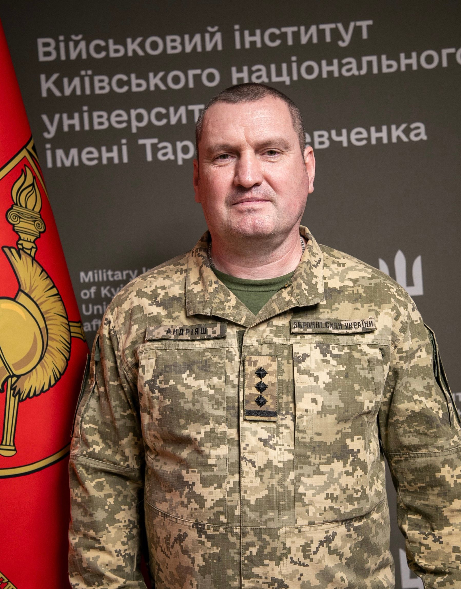
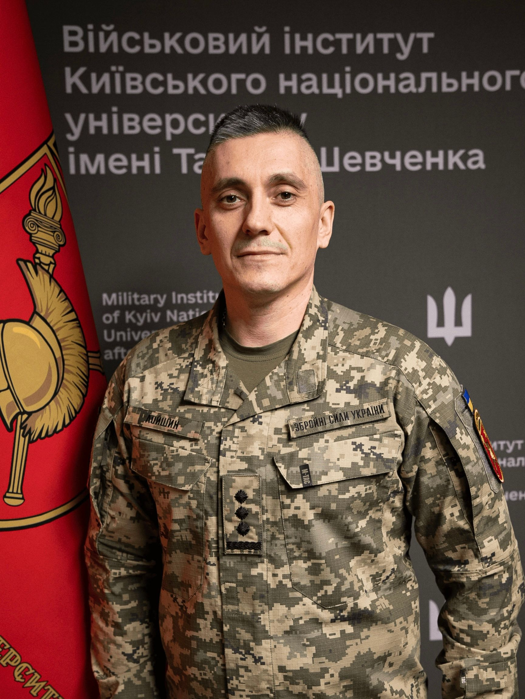
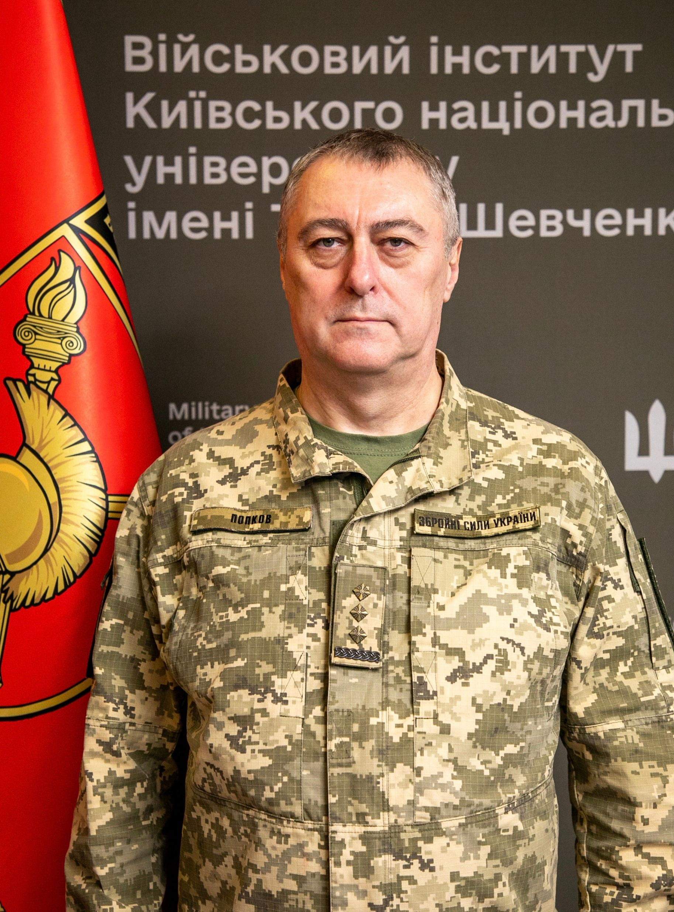
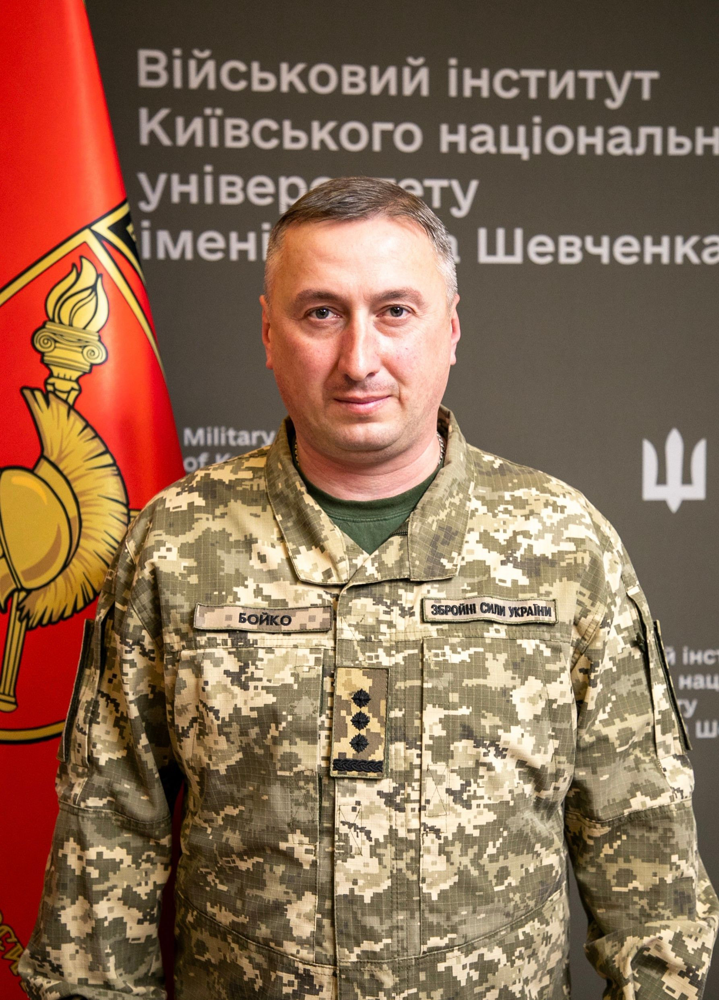
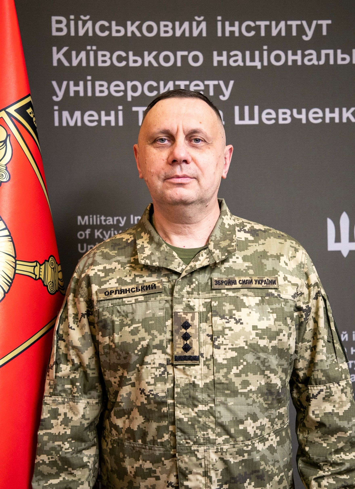
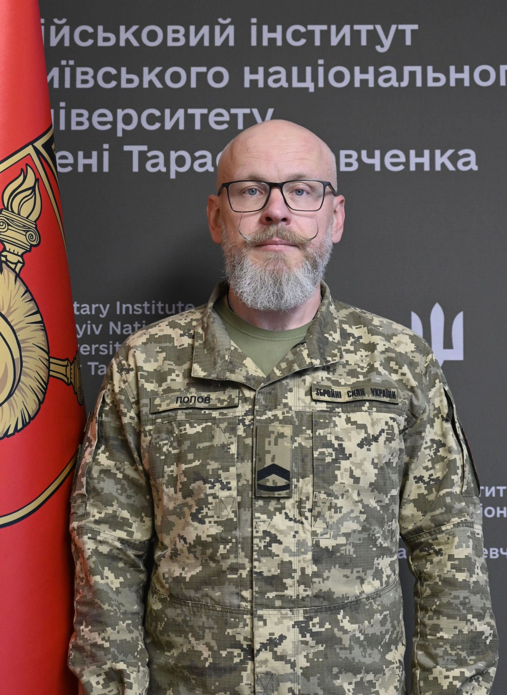

Бажаємо здоров'я!
Вітаємо на сторінці Військового інституту Київського національного університету імені Тараса Шевченка (далі – ВІКНУ) – сучасного міжвідомчого, багатопрофільного, інтегрованого військового навчального підрозділу провідного вищого навчального закладу України
ВІКНУ здійснює підготовку професіоналів з повною вищою освітою для:
Структура ВІКНУ
Керівництво
Військового інституту

Олексій Олександрович
Полковник
-
Заступник начальника
Військового інститутуАндріяш
Олексій Володимирович
Полковник -
Заступник начальника
з навчальної роботиЛойшин
Анатолій Анатолійович
Полковник -
Заступник начальника
з наукової роботиПопков
Борис Олексійович
Полковник -
Заступник начальника
з ПППБойко
Євген Олександрович
Полковник -
Заступник начальника
з тилуОрлянський
Володимир Вікторович
Полковник -
Заступник начальника
з озброєнняБондаренко
Олександр Вікторович
Полковник -
Головний сержант
Військового інститутуПопов
Максим Леонідович
Майстер-сержант

Військовий факультет соціальних та поведінкових наук
Кафедра військової психології та педагогіки
Кафедра створена в 1992 р. у складі факультету військово-фінансової підготовки. У 1997 р. відбувся перший набір курсантів за спеціальністю “Військова психологія”. Сьогодні кафедру очолює кандидат психологічних наук, доцент полковник Наталія МАСЬ. З метою вдосконалення професійної компетентності НПП кафедри систематично залучаються до психологічного супроводу військових, моніторингу ПТСР, проведення консультацій, участі в міжнародних тренінгах (США, Техас, Нью-Джерсі). Це дозволяє опановувати сучасні методи психодіагностики, кризової інтервенції та роботи з бойовим стресом — актуально в умовах воєнного стану.
НАВЧАЛЬНА РОБОТА
Кафедра забезпечує викладання військово-спеціальних дисциплін:
- Вступ до спеціальності
- Методологія військово-психологічних наукових досліджень
- Військова педагогіка та психологія
- Військова психологія
- Психологічне забезпечення військово-професійної діяльності підрозділів
- Гендерні аспекти військової психології
- Екстремальна психологія
- Загальна та військова педагогіка
- Індивідуальне консультування військовослужбовців та членів їх сімей
- Клінічна психодіагностика
- Психологічна допомога військовослужбовцям та членам їх сімей
- Прикладні аспекти військового полону
- Прикладні аспекти військової девіантології
- Психологія професійного самовдосконалення військового психолога
- Соціально-психологічні технології управлінської діяльності військового керівника
- Організація психологічного супроводу військових частин (з'єднань)
- Педагогічні технології в системі військової освіти та науки
для здобувачів першого (бакалаврського) та другого (магістерського) ступенів вищої освіти за спеціальність С4 “Психологія”.
З 2022 року у зв'язку із повномаштабним вторгненням агресора освітньо-професійні програми здобувачів першого (бакалаврського) та другого (магістерського) ступенів вищої освіти за спеціальність С4 “Психологія” були переглянуті і вдосконалені шляхом введення навчальних дисциплін:
- Психологія травмуючих ситуацій;
- Психологічна допомога особам з ПТСР;
- Прикладні аспекти військового полону;
- Прикладні аспекти інформаційної безпеки військовослужбовця;
- Психологія віктимності та суїцидальності;
- Технології роботи із залежними та співзалежними;
- Технології групової психотерапії;
- Технології когнітивно-поведінкової терапії;
- Психологія конфлікту;
- Нейропсихологія;
- Основи психотерапії;
- Основи травмофокусованої терапії;
- Основи психосоматики.
З метою вдосконалення фахових компетентностей випускники першого (бакалаврського) та другого (магістерського) ступенів вищої освіти за спеціальність С4 “Психологія” систематично залучаються до процесів реінтеграції військовослужбовців, звільнених з полону російського агресора; до процесів надання психологічної підтримки військовослужбовцям та членам їхніх сімей на базах реабілітаційних центрів; до проведення заходів психологічного супроводу особового складу під час виконання завдань за призначенням. При кафедрі функціонують: кабінет функціональної діагностики обладнаний комп’ютерами, з виходом до мережі Інтернет із встановленими програми “Лідер”, “PSY-D” та “PSY- Professional”, що використовується з метою формування у здобувачів практичних навичок з психологічного діагностування за допомогою спеціальних програмних продуктів, рекомендованих замовником для проведення заходів професійно-психологічного добору у військах та поглибленого соціально-психологічного вивчення особового кладу до та після участі у бойових діях; клас психологічної реабілітації оснащений електронними комплексами та для роботи з віртуальною реальністю – ноутбуками та VR-шоломами Meta Quest 2 128GB з преінстальованим ліцензійним програмним забезпеченням та курсом VR-відео, що дозволяє здобувачам освіти опановуватимуть техніки для удосконалення психологічної роботи у військах під час підготовки особового складу до бойових дій, психологічного супроводу під час виконання бойових завдань та відновлення особового складу після повернення з війни. З 2023 року на кафедрі проводяться курси професійної військової освіти, а саме: “Фаховий курс тактичного рівня L-1В (ВПс)”, “Командний курс тактичного рівня L-1С (ВПс)” та “Базовий курс тактичного рівня L-1А та фаховий курс тактичного рівня L-1В (ВПс)”. З 2017 року кафедра забезпечує проведення курсів підвищення кваліфікації військових фахівців за відповідним напрямом. Станом на поточний момент підвищення кваліфікацій ведеться за наступними програмами, а саме:
- Підвищення кваліфікації з питань організації та проведення заходів психологічної роботи з військовослужбовцями Збройних Сил України (ОПЗПР-ТР);
- Підвищення кваліфікації з питань професійно-психологічного відбору (ППП-ППВ);
- Підвищення кваліфікації з питань психологічної підготовки в навчальних центрах, центрах підготовки підрозділів Збройних Сил України (ПП-НЦ);
- Підвищення кваліфікації з питань організації освітнього процесу у військових ліцеях, ліцеях з посиленою військово-фізичною підготовкою (ООП-ВЛ);
- Підвищення кваліфікації з питань освітньої діяльності (ВІКНУ-ОД);
- Підвищення кваліфікації з питань методичної майстерності (ВІКНУ-ММ);
- Курс методичної підготовки (КМП-6).
У 2024 році науково-педагогічними працівниками кафедри розроблений онлайн-курс “Особливості роботи офіцера-психолога в умовах бойових дій” на платформі “PROMETHEUS”. В межах міжнародного співробітництва здобувачі освіти мають змогу слухати гостьові лекції та тренінги від відомих іноземних фахівців у сфері психології: від професора психології University of Miami (США), нейробіолога, доктора філософії Аміші ДЖА; від військового психолога Institute of Military Psychiatry University of Oslo (Норвегія) Тронда Івара ХЕГГЄ; від міжнародного тренера “Mindfulness Based Attention Training” Володимира ПАШКОВСЬКОГО тощо. А з 2019 року курсанти спеціальності С4“Психологія” приймають участь у некомерційній програмі Європейського союзу Еразмус, щодо обміну студентами та викладачами між університетами країн Євросоюзу.
НАУКОВА РОБОТА
З 2000 р. при кафедрі діє ад’юнктура. Дисертаційні дослідження ад’юнктів проводяться за спеціальностями “Психологія діяльності в особливих умовах”. Значну роботу як у підготовці науково-педагогічних кадрів, так і в організації й здійсненні навчально-виховного процесу проводять професори кафедри – доктор психологічних наук, професор, полковник запасу Сафін О.Д., доктор педагогічних наук, професор Кучерявий Андрій Олександрович. Основні напрями наукових пошуків кафедри:
- дослідження в сфері функціональної діагностики та психологічної реабілітації учасників бойових дій;
- обґрунтування норм фізичного та психоемоційного навантаження військовослужбовців під час бойових дій;
- проблема соціально-психологічної реадаптації учасників бойових дій;
- наукове обґрунтування впровадження сучасних педагогічних технологій в навчальний процес у ВВНЗ;
- сучасні психотехнології протидії негативному інформаційно-психологічному впливу в умовах гібридної війни;
- методи травмофокусованої терапії.
- вплив віртуальної реальності на учасників бойових дій під час психологічної реабілітації
МЕТОДИЧНА РОБОТА
2024 рік
- Всеукраїнська науково-практична конференція молодих вчених, ад’юнктів, слухачів, курсантів і студентів “Молодіжна військова наука у Київському національному університеті імені Тараса Шевченка” (м. Київ, 26 квітня 2024 р.)
- The 6 th International Scientific and Practical WEB-Forum (Київ – Харків, 26-29 березня 2024 р.)
- XІІ Всеукраїнська науково-практична конференція “Актуальні питання теорії та практики психолого-педагогічної підготовки майбутніх фахівців” (м. Хмельницький, 18 квітня 2024 р.)
- XІІ Всеукраїнська науково-практична конференція “Актуальні питання теорії та практики психолого-педагогічної підготовки майбутніх фахівців” (м. Хмельницький, 18 квітня 2024 р.)
- ХХ Міжнародна науково-практична конференція: “Військова освіта і наука: сьогодення та майбутнє” (м. Київ, 29 листопада 2024 р.)
- VIII International Scientific and Theoretical Conference: “Theory and practice of modern science: collection of scientific papers «SCIENTIA»” (Kraków, Republic of Poland: International Center of Scientific Research, October 11, 2024)
- The 6th International scientific and practical conference “The role of innovations in the transformation of the image of modern science” (Oslo, Norway, October 08-11, 2024)
- 7th International Scientific and Practical Conference “Experimental and Theoretical Research in Modern Science” (Toronto, Canada, October 16-18, 2024)
2025 рік
- VII Міжнародна наукова конференція “Міжгалузеві диспути: динаміка та розвиток сучасних наукових досліджень” (м. Полтава, 14.02.2025 р)
- VIII Міжнародна наукова конференція “Технології, інструменти та стратегії реалізації наукових досліджень” (м. Запоріжжя, 21.02.2025 р.)
- IV Міжнародна наукова конференція “Цифрове наукове суспільство: соціально-економічні, правові та міжнародні аспекти” (м. Дніпро 28.02.2025 р.)
- VI Міжнародна наукова конференція “Інноваційні тенденції сьогодення в сфері природничих, гуманітарних та точних наук” (м. Львів, 07.03.2025)
Публікації науково-педагогічних працівників кафедри:
- Охорона психічного здоровя військовослужбовців в умовах війни: у 2 т. / В. М. Мороз, В. О. Олійник, М. А. Коваль, Н.М. Мась та ін.; НДЦ ГП ЗС України; за заг. ред. В. В. Клочкова; рец. В. В. Стасюк; передм. В. В. Клочкова; дизайн В. П. Вітюка. Т. 1. Харків: Фоліо, 2024. 815 с.
- Охорона психічного здоров’я військовослужбовців в умовах війни: у 2 т. / В. М. Мороз, В.О. Олійник, М. А. Коваль, Н.М. Мась та ін.; НДЦ ГП ЗС України; за заг. ред. В .В. Клочкова; рец. В. В. Стасюк; дизайн В. П. Вітюка. Т. 2. Харків: Фоліо, 2024. 602 с.
- Психологічне забезпечення Збройних Сил України: навч. -метод. посіб. / за заг. ред. генерал-майора В. Клочкова. К.: НДЦ ГП ЗС України, 2024. 293 с.
- Мась Н.М. Корекція негативних психічних станів курсантів за допомогою технологій віртуальної реальності. Вісник Київського національного університету імені Тараса Шевченка. Військово-спеціальні науки, 2024. № 58(2(58), 50–54.
- Сторожук Н.А. Психологічні особливості формування іміджу сучасного підприємця. Scientific Journal «Psychology Travelogs», 2024, Issue 2. С.112-119.
- Storozhuk N.A. Psychological assistance to combat participants sign of amiboya psychic trauma. VII International Scientific and Practical Conference RECENT SCIENTIFIC INVESTIGATION held on February 26-28, 2024 in Oslo, Norway.
- Storozhuk N.A. The features of providing psychological assistance to combatants with signs of combat-related psychological trauma. V International Scientific and Theoretical Conference «Advanced discoveries of modern science: experience, approaches and innovations», February 23 2024; Amsterdam, Netherlands.
- Гоман Ю.О. Вплив емоцій та стресових ситуацій на прийняття рішень під час криз. Наукові перспективи. Серія Психологія 2025. №1(55). С. 1737-1746.
- Гаврюшенко В.В. Ментальне (психічне) здоров’я українських захисників: виклики, профілактика та перспективи реабілітації військовослужбовців в умовах російсько-української війни. Перспективи та інновації науки. 2024 № 12 (46)
- Клімішина Н.П. Психологічні чинники успішної командної роботи серед офіцерів у проблемних ситуаціях. Наукові перспективи: журнал. 2024, № 11(53) 2024. С.1283-1296
- Венгерчук А.Є. Гемблінгова залежність: поняття, види та фактори формування. Військова освіта і наука: сьогодення та майбутнє : зб. тез доповідей ХХ Міжнародної науково-практичної конференції, м. Київ, 29 листопада 2024 р. Київ : Військовий інститут Київського національного університету імені Тараса Шевченка, 2024. с. 160
- Герасимнюк І.О. Психопрофілактика девіантної поведінки учасників бойових дій. Збірник тез доповідей Всеукраїнської науково-практичної конференції молодих вчених, ад’юнктів, слухачів, курсантів і студентів «Молодіжна військова наука у Київському національному університеті імені Тараса Шевченка», м. Київ, 26 квітня 2024 р. Київ: Військовий інститут Київського національного університету імені Тараса Шевченка, 2024. С.56-57.
- Кучерявий А.О. Характеристика стану впровадження зарубіжного досвіду викладання навчальних дисциплін у Військовому інституті Київського національного університету імені Тараса Шевченка. Вісник Київського національного університету імені Тараса Шевченка. Військово-спеціальні науки. 2024. № 1(57). С. 15-25.
- Кучерявий А. Індивідуальний імідж як соціальний феномен у зарубіжній психології. Вісник Київського національного університету імені Тараса Шевченка. Військово-спеціальні науки. 2024. №60 (4(60)
- Кучерявий А.О. Таксономія Блума як методологічна основа визначення програмних результатів навчання у вищій військовій школі. Вісник Київського національного університету імені Тараса Шевченка. Військово-спеціальні науки 2024. №59(3(59). С. 5–13
- Кучерявий П.О. Методичні засади проведення навчальних занять при формуванні лідерської компетентності військового фахівця. Актуальні питання підготовки фахівців для сектору безпеки і оборони в умовах війни : матеріали Міжнародної науково-практичної конференції (м. Кропивницький, 19 квітня 2024 року). Кропивницький : ДонДУВС, 2024. С. 334–340. – URL: https://dnuvs.ukr.education/wp-content/uploads/2024/07/zbirnyk_materialiv_19_kvitnya_2024_roku-1.pdf
- Сафін О.Д. Діти вимушених переселенців в умовах війни: пошук ресурсів посттравматичного зростання. Вісник Київського національного університету імені Тараса Шевченка. Військово-спеціальні науки, 2024. № 60(4(60). С. 39–46.
- Сафін О.Д. Психологічна структура та типологія творчого Я керівника педагогічного колективу. Слобожанський науковий вісник. Серія: «Психологія», 2024. № 1.
- Сафін О.Д. Сучасні психофізиологічні методи професійно-психологічного відбору кандидатів на роботу. Psychology Travelogs, 2024. №2.
- Кожедуб О.В. Агресія: поняття, види, теорії . Scientific Collection «InterConf», (220): with the Proceedings of the 7th International Scientific and Practical Conference «Experimental and Theoretical Research in Modern Science» (October 16-18, 2024; Toronto, Canada) / comp. by LLC SPC «InterConf». Toronto: Aeropanzer, 2024. Р.127-129.
- Кожедуб О.В. Адаптація військовослужбовців до умов військової служби: поняття та види. Theory and practice of modern science: collection of scientific papers «SCIENTIA» with Proceedings of the VIII International Scientific and Theoretical Conference, October 11, 2024. Kraków, Republic of Poland: International Center of Scientific Research. Р.119-120.
- Кожедуб О.В. Суїцид: поняття та фактори ризику. The 6th International scientific and practical conference “The role of innovations in the transformation of the image of modern science” (October 08 – 11, 2024) Oslo, Norway. International Science Group. 2024. Р. 220-224.
- Левенець А.Є. Критичне мислення військовослужбовця як засіб протидії когнітивній війні противника. Збірник тез доповідей Всеукраїнської науково-практичної конференції молодих вчених, ад’юнктів, слухачів, курсантів і студентів «Молодіжна військова наука у Київському національному університеті імені Тараса Шевченка», м. Київ, 26 квітня 2024 р. Київ: Військовий інститут Київського національного університету імені Тараса Шевченка, 2024. С.80-82.
- Калишенков К.М. Психологічні механізми адаптації до стресу: стресори, стратегії копінгу та психологічний резилієнс. Збірник тез доповідей Всеукраїнської науково-практичної конференції молодих вчених, ад’юнктів, слухачів, курсантів і студентів «Молодіжна військова наука у Київському національному університеті імені Тараса Шевченка», м. Київ, 26 квітня 2024 р. Київ: Військовий інститут Київського національного університету імені Тараса Шевченка, 2024. С.55-56.
В контексті вдосконалення матеріально-технічного забезпечення освітнього процесу у 2023 році при кафедрі розгорнуто клас психологічної реабілітації, який оснащений 15 VR-шоломами з технологічною підтримкою від розробника, а також бібліотекою відеопрактик, спрямованих на навчання здобувачів освіти сучасним технологіям психологічної підготовки та психологічного відновлення особового складу із застосування засобів імітації віртуальної реальності. Загалом, використання цих технологій у роботі з особовим складом сприяє емпірично підтвердженому підвищенню показників психологічної стійкості та витривалості військовослужбовців та пришвидшує процес відновлення після впливу стрес-факторів бойових дій (ефективність доведена психологами). Під час навчання курсанти за допомогою VR відео матеріалів опановують техніки для стабілізації, заземлення, релаксації, емоційної саморегуляції стану військовослужбовців після участі в активних бойових діях.
Кафедра соціальної роботи у військах (силах)
Події останніх десяти років чітко продемонстрували необхідність посилення всіх напрямків розвитку ЗС України та інших підрозділів Сил оборони. Зокрема виникла гостра потреба посилення такого напрямку як соціальна робота з військовослужбовцями та членами їхніх родин. Важливим елементом формування нової системи соціального супроводу була організація підготовки фахівців відповідного напрямку. Завдяки спільній ініціативі начальника Головного управління морально-психологічного забезпечення та начальника Військового інституту КНУ ім. Т. Шевченка рішенням Міністра оборони України та Головнокомандувача ЗСУ в 2023 році на базі Військового інституту створено кафедру соціальної роботи у військах (силах) та розпочато підготовку фахівців за спеціальністю “Соціальна робота”. Основними завданнями майбутніх офіцерів буде організація та проведення заходів соціального супроводу, забезпечення реалізації соціальних прав та гарантій військовослужбовців, членів їх сімей, працівників ЗСУ; взаємодія з представниками територіальних центрів комплектування та соціальної підтримки, органами державної влади, місцевого самоврядування з питань сприяння у наданні адресної соціальної допомоги військовослужбовцям, які потребують додаткового соціального захисту, членам їхніх сімей, сім’ям військовослужбовців, які загинули, потрапили в полон, зникли безвісти.
НАВЧАЛЬНА РОБОТА
Освітня діяльність на кафедрі реалізується у вигляді навчально-виховного процесу, включає навчальну, виховну, методичну роботу та наукову і науково-технічну діяльність. Вона організовується відповідно до Положення про Військовий інститут та вимог навчальної частини Інституту. Основним видом діяльності Кафедри є навчальна робота. Вона організовується відповідно до Положення про Військовий інститут та вимог навчальної частини Інституту. Основні зусилля науково-педагогічних працівників кафедри спрямовані на:
- впровадження стандартів НАТО в освітній процес;
- вмінні застосовувати на практиці основні положення теорії соціальної роботи у військах (силах), у тому числі, за принципами NATO Social Services;
- підготовці майбутніх офіцерів, спроможних особисто надавати соціальну підтримку військовослужбовцям та членам їх родин у мирний та під час дії правового режиму воєнного стану;
- отриманні слухачами знань, необхідних для розуміння процесів планування, підготовки та реалізації управлінських рішень щодо соціального супроводу з урахуванням міжнародних стандартів та євроатлантичних процедур.
НАУКОВА РОБОТА
Науково-педагогічні працівники кафедри проводять наукові дослідження з наукової проблематики соціального захисту військовослужбовців та членів їх родин. НПП кафедри готують наукові статті, навчальні посібники, збірники документів, беруть участь в наукових заходах, які проводяться у Військовому інституті та університеті, а також на інших освітньо-наукових платформах. Молоді викладачі працюють над дисертаційними дослідженнями. Звітують про результати роботи на засіданнях кафедри. Курсанти залучаються до діяльності наукового гуртка, члени якого беруть участь в відомчих та міжнародних конференціях.
Кафедра поведінкових наук
Одним з основних напрямів діяльності Військового інституту Київського національного університету імені Тараса Шевченка є формування нової генерації військових лідерів для Збройних Сил України та інших військових формувань сектору безпеки та оборони, майбутньої еліти держави. Кафедра поведінкових наук була створена та почала своє функціонування в жовтні 2023 року. Кафедра призначена для проведення освітньої діяльності з військово-професійної підготовки здобувачів освіти, а також участі у науковій діяльності, що спрямовані на забезпечення формування військових лідерів за принципами та стандартами НАТО під час освітнього процесу на тактичному рівні професійної військової освіти (L-1,) у курсантів (слухачів) Військового інституту.
Основними завданнями кафедри є:
- формування нового стилю військового лідерства та лідерської поведінки;
- формування та розвиток особистісних компетентностейвійськового лідера;
- формування професійної культури військового лідера на основі євроатлантичних принципів та національно-історичних традицій;
- формування знань в контексті філософії війни, історії війн та воєнного мистецтва;
- впровадження досвіду військового лідерства, набутого за час збройної агресії російської федерації проти України;
- формування логічного мислення, розкриття аналітичних здібностей та розуміння філософії, як фундаментальної науки, а також філософії війни;
- формування культури сприйняття, відтворення та поширення інформації.
Кафедра військової політології
ІСТОРИЧНА ДОВІДКА
Одним із напрямів діяльності Військового інституту Київського національного університету імені Тараса Шевченка є підготовка кваліфікованих військових фахівців за спеціальністю С2 “Політологія” для Збройних Сил України та інших військових формувань сектору безпеки та оборони. Знання, які отримують випускники кафедри забезпечують глибоке розуміння політичних аспектів військової справи, сприяє розробці ефективних стратегій та прийняттю обґрунтованих рішень. Використовуючи знання воєнної політології, військові лідери можуть краще орієнтуватися у складних політичних ситуаціях, прогнозувати майбутні загрози та забезпечувати надійний захист держави. Базову освіту майбутні військові політологи здобувають на філософському факультеті Київського національного університету імені Тараса Шевченка.
Кафедра військової політології у складі Військового інституту створена 18 жовтня 2018 року на підставі спільної директиви Міністерства оборони та Генерального штабу ЗС України від 6 жовтня 2018 року.
Укомплектування кафедри науково-педагогічним складом розпочато 7 грудня 2018 року. З 16 січня 2019 року кафедра розпочала свою роботу. 1 жовтня 2023 року кафедра увійшла до складу військового факультету соціальних та поведінкових наук.
З метою передачі бойового досвіду здобувачам освіти, науково-педагогічні працівники кафедри постійно беруть участь у заходах із забезпечення національної безпеки й оборони, відсічі й стримування збройної агресії російської федерації.
НАВЧАЛЬНА РОБОТА
Кафедра забезпечує викладання наступних військово-спеціальних дисциплін:
-
ОПП Воєнна політологія
- Внутрішньо-комунікаційна робота та інформаційний супровід
- Вступ до спеціальності
- Воєнна політологія
- Воєнно-політична історія України
- Національно-патріотична підготовка в Збройних Силах України
- Державна інформаційна політика в сфері оборони
- Політична психологія
-
ОПП Осередок руху опору
- Основи руху опору
- Основи роботи з населенням
- Основи безпеки руху опору
- Основи оперативної психології
- Спеціальні засоби руху опору
- Розвідувально-інформаційна діяльність руху опору
- Тактика дій осередків руху опору
Крім того, іншими кафедрами військового інституту здійснюється викладання загальновійськових дисциплін, а філософським факультетом Київського національного університету імені Тараса Шевченка – дисциплін спеціальності.
З 2019 року науково-педагогічний склад кафедри та курсанти спеціальності “Політологія” беруть участь програмі Еразмус+, щодо обміну студентами та викладачами між університетами країн Євросоюзу.
З 2023 року науково-педагогічний склад кафедри та курсанти спеціальності “Політологія” беруть участь у програмі НАТО DEEP, що спрямована на зміцнення системи військової освіти країн-партнерів Альянсу, підвищення стандартів військової освіти, зокрема, шляхом реформування навчальних програм, впровадження сучасних методів навчання, а також професійного розвитку викладацького складу.
З 2025 року науково-педагогічний склад кафедри забезпечують підготовку фахівців за напрямком Руху опору ВОС-086000 (організація, підготовка, ведення та підтримання дій осередку руху опору).
Основні зусилля науково-педагогічних працівників кафедри спрямовані на:
- впровадження стандартів НАТО в освітньому процесі
- комплексне розуміння природи та значення воєнної політики як специфічної сфери, яка базується на стратегічних засадах безпекової та оборонної політики держави
- підготовку майбутніх офіцерів здатних організовувати та здійснювати інформаційний супровід запланованих заходів впливу на свідомість особового складу з метою подальшого формування національної ідентичності на основі національної воєнно-історичної спадщини, а також аналізувати суспільно-політичну обстановку в районі дислокації та під час виконання військами (силами) завдань за призначенням, прогнозувати воєнно-політичну обстановку
- підготовку офіцерів спроможних використовувати широкий спектр політологічних теорій, концептів і методів для професійної інтерпретації та змістовного аналізу безпекової та воєнної політики держави, міждержавних об’єднань та значних соціальних сил всередині держави відповідно до певного історичного контексту та сучасних геополітичних трансформацій
НАУКОВА РОБОТА
Починаючи з 2019 року при кафедрі військової політології функціонує ад’юнктура. Дисертаційні дослідження ад’юнктів проводяться за спеціальністю С2 “Політологія”.
Основні напрями наукових пошуків кафедри:
- дослідження в сфері сектору безпеки і оборони України;
- роль стратегічних комунікацій у здійсненні національної безпеки;
- аналіз досвіду забезпечення кібербезпеки в Збройних Силах України та країн-партнерів;
- аналіз сучасних загроз в інформаційному просторі, методів ведення інформаційних війн та засобів захисту інформаційної безпеки держави;
- сучасні методи реагування на дезінформацію в інформаційних каналах сфери оборони.
Науково-педагогічні працівники кафедри розробляють наукові статті, навчальні посібники, збірники документів, беруть участь в наукових заходах, які проводяться у Військовому інституті та університеті, а також на інших освітньо-наукових платформах.
Курсанти залучаються до діяльності наукового гуртка та беруть участь у відомчих та міжнародних науково-практичних конференціях.
МЕТОДИЧНА РОБОТА
По закінченню навчання випускники отримують ступінь вищої освіти “бакалавр” та “магістр”, кваліфікацію офіцера тактичного рівня, а також вміння та навички, що дають змогу:
- здійснювати воєнно-політичне прогнозування;
- проводити аналітичну роботу;
- забезпечувати стратегічні комунікації;
- формувати інформаційний контент, створювати комунікаційні стратегії, ПР матеріали, медіапродукти;
- організовувати взаємодію з місцевими органами влади, ЗМІ, громадськими та волонтерськими організаціями, релігійними об’єднаннями в районі виконання завдань за призначенням;
- виявляти та оцінювати основні напрямки інформаційно-психологічного впливу противника;
- оцінювати суспільно-політичну обстановку в районах виконання завдань;
- впроваджувати технології впливу на громадськість.

Військовий факультет міжнародних відносин та права
Кафедра військового права
ЗАГАЛЬНІ ВІДОМОСТІ
Про кафедру
Кафедра військового права є структурним підрозділом військового факультету міжнародних відносин та права Військового інституту Київського національного університету імені Тараса Шевченка, головним завданням якого є підготовка в інтересах Збройних Сил України офіцерів тактичного рівня за напрямом підготовки D8 “Право”.
Навчання курсантів проводиться на базі:
- Військового інституту, де кафедра забезпечує викладання загальноправових та військово-правових дисциплін;
- Навчально-наукового інституту права Київського національного університету імені Тараса Шевченка з повним залученням його наукового та навчально-матеріального потенціалу.
Інтегроване навчання обумовлює високу якість освіти, забезпечує здобуття глибоких і ґрунтовних базових знань тими, хто навчається, формує готовність випускників стояти на варті законності та правопорядку у Збройних Силах України.
До навчального процесу залучаються представники Військової служби правопорядку у Збройних Силах України, Центрального управління цивільно-військового співробітництва Генерального штабу Збройних Сил України, юридичної служби Збройних Силах України, волонтерських та громадських організацій України, делегації Міжнародного Комітету Червоного Хреста, Датської Ради у справах біженців в Україні, місії ООН з прав людини, Центру з питань захисту цивільного населення у збройних конфліктах, Координаційного центру з надання правової допомоги, Регіонального центру прав людини та інші.
Освітньо-професійні програми, за якими здійснюється підготовка на кафедрі:
-
Замовник - Головне управління Військової служби правопорядку Збройних Сил України
- Освітній рівень "Бакалавр": "Правоохоронна діяльність в Збройних Силах України";
- Освітній рівень "Магістр": "Організація правозастосовної діяльності в Збройних Силах України".
-
Замовник – Центральне управління цивільно-військового співробітництва Генерального штабу Збройних Сил України
- Освітній рівень "Бакалавр": "Цивільно-військові відносини";
За час свого існування кафедра підготувала більше тисячі фахівців, абсолютна більшість з яких проходить військову службу на юридичних посадах в структурах Міністерства оборони України, Збройних Сил України, інших військових формуваннях, розвідувальних та правоохоронних органах України.
Наші партнери
З 2018 року представники кафедри військового права Військового інституту є учасниками підкомітету Військової поліції Багатонаціонального об’єднаного координаційного комітету з питань військового співробітництва та оборонного реформування. Завдяки цьому партнери з числа збройних сил країн-членів НАТО (Канада, Велика Британія, Латвія, Литва, Чехія, Данія, Польща, Бельгія та інші) надають допомогу у практичній підготовці курсантів у відповідності до стандартів військової поліції країн НАТО.
Завдяки партнерству курсанти та науково-педагогічні науково-педагогічний склад кафедри під керівництвом інструкторів з Великої Британії та Канади проходять навчання на курсах:
- Розширена домедична допомога в умовах бойових дій;
- Бойові дії у міській забудові;
- Застосування сили;
- Курс слідства;
- Базовий курс військового поліцейського;
- Курс лідерства.
Курсова підготовка здійснюється на базі 25 навчально центру Військової служби правопорядку Збройних Сил України (м. Львів).
За результатами успішного закінчення курсів особовий склад отримує сертифікати міжнародного зразка про готовність виконувати завдання у складі та взаємодії з підрозділами країн-членів НАТО.
Кафедрою досягнуто домовленість щодо проведення курсів дистанційного навчання для курсантів 3 та 4 курсів "Доктрина військової поліції за стандартами НАТО" та "Застосування військової поліції в операціях країн членів НАТО" на базі Центру досконалості Військової поліції НАТО (м. Бидгощ, Республіка Польща).
Крім того, методичну та консультативну допомогу кафедрі у навчанні курсантів надає Центр Сухопутних військ Збройних Сил Сполучених Штатів Америки імені Джона Ф. Кеннеді. Американськими партнерами кафедрі передано лекційний курс "Цивільно-військове співробітництво" за стандартами країн НАТО, програмне забезпечення для оцінки цивільного середовища. Фахівцями даного Центру з науково-педагогічними працівниками кафедри проведені інструкторсько-методичні заняття щодо порядку та особливостей проведення занять за даним курсом та використання програмного забезпечення в інтересах Збройних Сил України.
Курсанти та науково-педагогічні працівники кафедри приймали безпосередню участь в українсько-американських командно-штабних навчаннях "Rapid Trident 2019", "Rapid Trident 2020", "Rapid Trident 2021".
НАВЧАЛЬНА РОБОТА
ОПП Правоохоронна діяльність у Збройних Силах України
Метою професійної діяльності військового фахівця за ВОС 390600 (850600) "Правоохоронна діяльність в Збройних Силах України" є зміцнення законності, правопорядку та військової дисципліни у Збройних Силах України, забезпечення конституційних прав військовослужбовців з урахуванням професійної специфікації MPU OS 2018.
За умови обрання одного із вибіркових блоків дисциплін навчального плану освітньої програми (у відповідності до Професійного стандарту офіцера тактичного рівня Збройних Сил України (галузь знань D Бізнес, адміністрування та право, Спеціальність D8 Право, ВОС 850600 (390600) "Правоохоронна діяльність в Збройних Силах України"), складання всіх форм контролю, захисту практики та проходження підсумкових атестацій, рішенням екзаменаційної комісії курсанту присвоюється професійна кваліфікація – юрист, офіцер тактичного рівня.
Назви типових посад:
- офіцер відділення (відділу) запобігання, виявлення злочинів та інших правопорушень;
- офіцер групи (відділення, відділу) проведення службових розслідувань;
- офіцер групи (відділення, відділу) охорони, патрульно-постової служби та розшуку;
- офіцер режимної служби;
- офіцер групи (відділення, відділу) військової інспекції безпеки дорожнього руху;
- командир взводу (заступник командира роти) ВСП за напрямом діяльності.
Основні документи, які регулюють професійну (службову) діяльність:
- Конституція України
- Статути Збройних Сил України
- Кодекс законів про працю України
- Закон України "Про Збройні Сили України"
- Закон України "Про військовий обов'язок і військову службу"
- Закон України "Про Військову службу правопорядку у Збройних Силах України"
- Положення про проходження громадянами України військової служби у Збройних Силах України
- STANAG 2296 AJP-3.21 Allied Joint Doctrine for Military Police
- STANAG 2226 ATP-3.7.2 NATO Military Police Guidance and Procedures
- STANAG 2085 NATO Combined Military Police
- Військова керівна деталізована публікація Доктрина "Військова служба правопорядку у Збройних Силах України", ВКП10-00(34).01, затверджена НГШ ЗС України 22.10.2020
- Нормативно-правові акти Міністерства оборони України та накази (директиви) Головнокомандувача Збройних Сил України
ОПП Цивільно-військові відносини
Метою професійної діяльності військового фахівця за ВОС 850400 "Цивільно-військове співробітництво" є створення сприятливих умов для виконання покладених на Збройні Сили України завдань за призначенням, а також недопущення перешкоджання цій діяльності з боку місцевого населення у районах постійної дислокації військових частин та підрозділів Збройних Сил України, на шляхах переміщення військ (сил) та під час запровадження заходів правового режиму надзвичайного та воєнного стану, участі в стабілізаційних (антитерористичних) операціях, операціях з підтримання миру і безпеки.
За умови обрання одного із вибіркових блоків дисциплін навчального плану Освітньої програми (у відповідності до Професійного стандарту офіцера тактичного рівня Збройних Сил України (галузь знань D Бізнес, адміністрування та право, Спеціальність D8 Право, ВОС 850400 "Цивільно-військове співробітництво"), складання всіх форм контролю, захисту практики та проходження підсумкових атестацій, рішенням екзаменаційної комісії курсанту присвоюється професійна кваліфікація – юрист, офіцер тактичного рівня.
Назви типових посад
- офіцер підрозділу ЦВС (командування виду збройних сил, окремого роду військ (сил));
- офіцер підрозділу ЦВС ОК (ПВК, КМП);
- офіцер відділення ЦВС бригади (батальйону).
Основні документи, які регулюють професійну (службову) діяльність
- Конституція України від 28.06.1996 р. № 254к/96-ВР
- Кодекс законів про працю України від 10.12.1971 р. № 322-VIII
- Закон України від 06.12.1991 р. № 1934-XII “Про Збройні Сили України”
- Закон України від 25.03.1992 р. № 2232-XII “Про військовий обов’язок і військову службу”
- Закон України від 24.03.1999 р. № 548-XIV “Про Статут внутрішньої служби Збройних Сил України”
- Закон України від 24.03.1999 р. № 551-XIV “Про Дисциплінарний статут Збройних Сил України”
- Закон України від 24.03.1999 р. № 550-XIV “Про Статут гарнізонної та вартової служб Збройних Сил України”
- Закон України від 24.03.1999 р. № 549-XIV “Про Стройовий статут Збройних Сил України”
- Указ Президента України від 10.12.2008 р. № 1153/2008 “Про Положення про проходження громадянами України військової служби у Збройних Силах України”
- Наказ Міноборони України від 23.03.2017 р. № 164 “Про затвердження Інструкції про порядок виконання норм міжнародного гуманітарного права у Збройних Силах України”
- Військова керівна деталізована публікація Доктрина "Цивільно-військове співробітництво", ВКП 9-00(01).01, затверджена Головнокомандувачем Збройних Сил України 01.07.2020 р.
- Наказ Генерального штабу Збройних Сил України від 20.12.2017 р. № 446 “Про Положення про цивільно-військове співробітництво Збройних Сил України”
- Наказ начальника Генерального штабу – Головнокомандувача ЗС України від 02.04.2019 №131 “Про затвердження тимчасової настанови з цивільно-військового співробітництва у ході підготовки та застосування Збройних Сил України”
- Наказ начальника Генерального штабу – Головнокомандувача ЗС України від 24.04.2019 №159 “Про затвердження тимчасової інструкції з оцінки цивільного середовища”
- STANAG 2509 AJP-3-19 Allied Joint Doctrine for Civil-Military Cooperation (November 9, 2018)
- STANAG 2449 ATRAINP-2 Training in the Law of Armed Conflict (June 26, 2019)
- Нормативно-правові акти Міністерства оборони України та накази (директиви) Головнокомандувача Збройних Сил України.
Курси перепідготовки та підвищення кваліфікації
Кафедра військового права здійснює підвищення кваліфікації та перепідготовку військовослужбовців та працівників Збройних Сил України:
- Курси підвищення кваліфікації осіб офіцерського складу Військової служби правопорядку у Збройних Силах України;
- Курси підвищення кваліфікації осіб офіцерського складу за напрямом діяльності цивільно-військового співробітництва Збройних Сил України;
- Курси підвищення кваліфікації фахівців юридичної служби Збройних Сил України з права збройних конфліктів, операційного права;
- Курси перепідготовки та підвищення кваліфікації військовослужбовців офіцерського і сержантського складу з вищою освітою.
- Курси професійної військової освіти.
Навчальна практика
В Освітньо-професійних програмах "Цивільно-військові відносини" та "Правоохоронна діяльність в Збройних Силах України", а також у Навчальних планах передбачено проведення таких видів практичної підготовки:
- практика у сфері права, зокрема на базі юридичних служб органів місцевого самоврядування, органів законодавчої та виконавчої влади, підприємств, установ та організацій незалежно від форми власності, нотаріату;
- практика в судах, або в системі прокуратури, адвокатури;
- військове стажування за фахом на первинних посадах за спеціалізацією;
- навчальна практика за програмою, модуль “Бойова система виживання воїнів”;
- навчальна практика за програмою (Командир відділення);
- навчальна практика за програмою (Командир взводу).
Складником практичної підготовки за напрямом діяльності кафедри є військові (навчальні) практики та стажування на первинних посадах за спеціалізацією. Дані заходи проводяться починаючи з другого курсу навчання курсантів на базі територіальних управлінь, зональних відділів (відділень) Військової служби правопорядку Збройних Сил України, підрозділів цивільно-військового співробітництва оперативних командувань, корпусів та бригадної ланки.
Додаткова вогнева та тактико-спеціальна підготовка тих, хто навчається, здійснюється на базі 25 навчального центру та 138 центру спеціального призначення Військової служби правопорядку Збройних Сил України.
НАУКОВА РОБОТА
Наукові напрями досліджень кафедри складаються з урахуванням визначених інститутських тематик науково-дослідних робіт та кафедральних тем, обумовлених актуальністю проблем, що підлягають розробці, а також змісту навчальних програм дисциплін, викладання яких забезпечують викладачі кафедри.
Зокрема, колектив кафедри працює над одержанням нових знань щодо розвитку воєнної організації держави, сектору безпеки і оборони, теоретичних основ будівництва і розвитку Збройних Сил, закономірностей цивільно-військових відносин та захисту цивільного населення у збройних конфліктах, організаційно-правових аспектів правоохоронної діяльності у Збройних Силах України тощо.
Кафедра активно бере участь у щорічних науково-практичних конференціях інституту, забезпечуючи роботу секції актуальних проблем військового права та права національної безпеки, а також у наукових конференціях, що проводять інші заклади вищої освіти. Крім того, на підставі звернень органів військового управління, військових частин, військових навчальних закладів, установ та організацій кафедра надає наукові висновки та рецензії з правових питань.
Науково-педагогічний склад кафедри регулярно виступає в якості рецензентів та опонентів під час проведення захисту дисертацій на здобуття наукових ступенів доктора філософії та доктора наук.
На основі індивідуальних досліджень викладачів кафедри публікуються наукові та навчально-методичні праці.
Кафедра спеціальної мовної підготовки
Внаслідок реорганізації кафедри військового перекладу та спеціальної мовної підготовки наприкінці 2018 року та з метою оптимізації вивчення англійської мови курсантами немовних спеціальностей було утворено кафедру спеціальної мовної підготовки (кафедра що забезпечує).
Основні завдання
- організація та проведення освітньої, методичної та наукової діяльності для забезпечення викладання англійської мови курсантам немовних спеціальностей, які виконують освітньо-професійні програми підготовки фахівців ступенів вищої освіти «бакалавр» та «магістр» за спеціальностями C2 Політологія; C4 Психологія; C7 Журналістика; D2 Фінанси, банківська справа, страхування та фондовий ринок; D8 Право; G18 Геодезія та землеустрій.
- проведення мовного тестування та видача сертифіката відповідно до стандарту НАТО СТАНАГ – 6001 з метою визначення рівня сформованості навичок і вмінь курсантів із чотирьох базових видів мовленнєвої діяльності, а саме: аудіювання, говоріння, читання та письма.
Дисципліни кафедри
- Іноземна мова (загальний, загальновійськовий та спеціальний курс);
- Інтенсивний мовний курс за напрямом Military Police;
- Іноземна мова в професійній діяльності.
Кафедра військового перекладу
ІСТОРИЧНА ДОВІДКА
Кафедра військового перекладу бере початок від Циклу військового перекладу, заснованого в Київському університеті у 1949 році.
| 1944 | Відновлення підготовки студентів та поновлення військової кафедри, яка почала готувати сержантів артилерії, військових перекладачів та медичних сестер; |
| 1949 | Заснування Циклу військового перекладу, запровадження військової підготовки для студентів; |
| 1954 | Скасування підготовки військових перекладачів; |
| 1963 | Поновлення військової підготовки студентів факультету іноземних мов за програмою військових перекладачів запасу; |
| 1971 | Початок підготовки студентів факультету міжнародних відносин за програмою військових перекладачів запасу; |
| 1992 | Цикл військового перекладу реорганізовано в кафедру військового перекладу; |
| 1993 | Початок підготовки військових перекладачів кадрової служби; |
| 1997 | Кафедру військового перекладу реорганізовано в кафедру іноземних мов та військового перекладу; |
| 2000 | Кафедру військового перекладу виокремлено зі складу факультету іноземних мов та військового перекладу; |
| 2012 | Кафедру військового перекладу реорганізовано в кафедру військового перекладу та спеціальної мовної підготовки внаслідок об’єднання з кафедрою військово-спеціальної мовної підготовки в складі факультету іноземних мов та військового перекладу; |
| 2013 | Кафедра військового перекладу та військово-спеціальної мовної підготовки в складі військового гуманітарно-лінгвістичного факультету; |
| 2019 | Кафедру військового перекладу та спеціальної мовної підготовки реорганізовано в кафедру військового перекладу в складі військового гуманітарно-лінгвістичного факультету з метою удосконалення підготовки військових фахівців за спеціальністю “Філологія” за новими освітньо-професійними програмами “Військовий переклад” та “Лінгвістичне забезпечення військ”; |
| 2024 | Кафедра військового перекладу в складі військового факультету міжнародних відносин та права. |
НАВЧАЛЬНА РОБОТА
Навчальна робота на кафедрі організована відповідно до затверджених та акредитованих Національним агентством із забезпечення якості вищої освіти освітньо-професійних програм за спеціальністю В11 “Філологія” за першим (бакалаврським) та другим (магістерським) рівнями вищої освіти. На сьогодні кафедра є єдиним підрозділом у Збройних Силах України, який здійснює підготовку військових фахівців тактичного рівня з вищою освітою за спеціальністю В11 “Філологія”, спеціалізацією “Військовий переклад”. Курсанти вивчають англійську, німецьку, французьку мови. Кафедра здійснює підготовку:
- за освітнім ступенем “бакалавр” за спеціальністю В11 “Філологія”, освітньою програмою “Військовий переклад”, 240 кредитів ЄКТС, термін навчання 4 роки. Після завершення навчання курсанти здобувають вищу освіту першого рівня та диплом бакалавра “Філології” зі спеціальності В11 “Філологія”, офіцер управління тактичного рівня;
- за освітнім ступенем “магістр”, освітньою програмою “Лінгвістичне забезпечення військ”, 90 кредитів ЄКТС, термін навчання 1 рік та 5 місяців. Після навчання слухачі здобувають вищу освіту другого рівня та диплом магістра “Філології” зі спеціальності В11 “Філологія”, спеціалізація “Лінгвістичне забезпечення військ”, професійну кваліфікацію “Перекладач (двох іноземних мов), офіцер управління тактичного рівня”;
- наукових кадрів, спільно з лінгвістичним науково-дослідним управлінням Військового інституту, на здобуття наукового ступеня доктора філософії зі спеціальності – В11 “Філологія” (Перекладознавство);
- перепідготовку та підвищення кваліфікації осіб офіцерського складу та військової підготовки для сержантського складу з вищою освітою зі спеціальності “Військовий переклад”;
- курси підвищення кваліфікації з питань удосконалення навичок письмового та усного перекладу, володіння військово-спеціальною термінологією ВСТ-ОР та військово-технічною термінологією ВТТ-ОР (англійська мова);
- викладання навчальних дисциплін “Основи військового перекладу” та “Воєнно-політичний переклад” курсантам зі спеціальності С3 “Міжнародні відносини” кафедри інформаційно-аналітичних технологій, в якості кафедри, що забезпечує;
- перекладацький супровід заходів військового співробітництва Збройних Сил України (за рішенням Міністра оборони України, Головнокомандувача ЗСУ, Командувача Сухопутних військ ЗСУ, НВІ).
Кафедра викладає 10 авторських унікальних навчальних дисциплін на першому (бакалаврському) рівні вищої освіти та 8 на другому (магістерському) рівні вищої освіти.
Забезпечення практичних складників підготовки
Теоретичні знання, починаючи з 2 курсу, курсанти-перекладачі закріплюють під час перекладацького супроводу різноманітних заходів військового співробітництва Збройних Сил України серед яких: підготовка підрозділів Збройних Сил України, багатонаціональні навчання, різноманітні командно-штабні курси, конференції, міжнародні спеціалізовані виставки, робочі зустрічі тощо.
Військову практику та військове стажування курсанти проходять в департаментах Міністерства оборони України та управліннях Генерального штабу Збройних Сил України, які здійснюють міжнародне співробітництво з відповідними військовими установами збройних сил держав-членів НАТО, країн-партнерів і міжнародними організаціями за воєнно-політичним, військово-технічним, військовим та іншими напрямами.
Крім того, курсанти за спеціальністю В11 “Філологія” виконують термінові позапланові практичні завдання, пов’язані із лінгвістичним забезпеченням заходів міжнародного співробітництва інших складових сектору безпеки та оборони України.
Удосконалення знання іноземної мови здійснюється у військових навчальних закладах іноземних країн Республік Франції та Австрії, Федеративної Республіки Німеччини, Королівства Бельгії тощо.
Впровадження заходів Програми НАТО “Удосконалення військової освіти” DEEP
Курсанти, слухачі за спеціальністю В11 “Філологія” та науково-педагогічні працівники кафедри постійно беруть участь у різноманітних заходах Програми НАТО “Удосконалення військової освіти” DEEP серед них: курс з прикладної техніки усного послідовного перекладу у Центрі мовної підготовки в Європі (м. Гарміш-Партенкірхен, Федеративна Республіка Німеччина), онлайн-курс “Порядок дій командира з управління військами” (Troop Leading Procedures course) на базі Військової академії ЗС Литовської Республіки імені Йонаса Жемайтіса (General Jonas Zemaitis Military Academy of Lithuania), курс “e-Instructor Certification Programme” та багато інших.
Крім того, курсанти слухачі та науково-педагогічні працівники кафедри проходять навчання на дистанційних онлайн-курсах в рамках програми НАТО DEEP eAcademy та отримують відповідні сертифікати
Використання в освітньому процесі інформаційних технологій
Курсанти кафедри використовують під час практичних занять різноманітні сервіси з пошуку інформації, електроні словники, електронні бази даних, програми-перекладачі та системи машинного перекладу "Reverso", "Translate Google", "DeepL Translate", платформу "KNU Education Online", інформаційно-довідковий ресурс стандартизованої військової термінології та інформаційно-довідкову систему військових стандартів України розроблених лінгвістичним науково-дослідним управлінням Військового інституту.
Впроваджено в освітній авторські електронні підручники: "Основи військового перекладу (англійська мова)", "Військово-технічний (англійська мова)" та "Військово-спеціальний переклад (англійська мова)", які надають можливість в режимі онлайн 24/7 опановувати навчальні дисципліни
Щодня використовується програмне забезпечення "NIBELUNG" італійської компанії "LAIN S.R.L." – програми, яка перетворює комп’ютерний клас в інтерактивну мультимедійну середу з розширеними можливостями лінгафонні лабораторії.
Крім того, курсанти 4 курсу та слухачі 1 року навчання використовують платформу програмного забезпечення для локалізації та перекладів "Crowdin" – для автоматизації, забезпечення гнучкості, швидкості і надійності процесів перекладу під час здійснення лінгвістичного забезпечення заходів військового співробітництва Збройних Сил України.
Впровадження професійної військової освіти
Для вдосконалення системи професійної військової освіти відповідно до стандартів НАТО, кращих вітчизняних та закордонних практик, досвіду ведення бойових дій та враховуючи основні положення (вимоги) спільної директиви стратегічних командувань НАТО “Освіта та індивідуальна підготовка (E&ITD) 075-007”, що забезпечує синхронізацію якості та змісту з аналогічними курсами професійної військової освіти країн Альянсу на кафедрі впроваджена багаторівнева система професійної військової освіти
В освітньо-професійні програми освітнього ступеня “бакалавр” інтегровані курси професійної військової освіти: базового (L-1A) та фахового (L-1B) тактичного рівня, а в освітньо-професійні програми освітнього ступеня “магістр” інтегрований командний курс тактичного рівня (L-1С).
Академічна мобільність
З метою отримання передових знань та вивчення фахових дисциплін у ВВНЗ держав-членів НАТО, курсанти, слухачі за спеціальністю В11 “Філологія” та науково-педагогічні працівники кафедри є постійними учасниками програми академічної мобільності ЄС ЕРАЗМУС+. Серед них: Військова академія імені Г.С. Раковського (Республіки Болгарія), Королівська військова академія м. Брюссель, (Королівство Бельгія) тощо.
Впровадження в освітній процес стандартів НАТО
Для цілеспрямованої підготовки військових фахівців кафедри до практичного виконання обов’язків на посадах за призначенням спільно з офіцерами держав-членів НАТО та країн-партнерів у освітній процес підготовки впроваджено 5 стандартів НАТО.
НАУКОВА РОБОТА
Науково-педагогічні працівники беруть участь у міжнародних, всеукраїнських, міжвишівських науково-практичних та науково-методичних конференціях, виконують науково-дослідні роботи відповідно до пріоритетних напрямів наукових досліджень лінгвістичного науково-дослідного управління науково-дослідного центру Військового інституту в якості співвиконавців:
- Розроблення мобільного застосунку (MilDict) військових термінів НАТО, що використовуються в ЗСУ, шифр "ЯБЛУКО";
- Інноваційна технологія проведення наукових досліджень з використанням генеративного штучного інтелекту в науковій діяльності оборонного сектору України
На кафедрі проводиться постійний науковий семінар із проблем перекладознавства з метою підготовки наукових кадрів, визначення перспективних напрямків дослідження та апробації одержаних наукових результатів.
Кафедра здійснює підготовку науково-педагогічних та наукових кадрів за спеціальністю В11 “Філологія” на здобуття наукового ступеня “доктор філософії (Перекладознавство)”.
Під керівництвом науково-педагогічних працівників кафедри активно працює воєнно-наукове товариство курсантів. Робота товариства спрямована на проведення наукових досліджень проблем військового перекладу, подальшого розвитку жанрових і спеціальних теорій перекладу, функціонально-стильових та жанрових параметрів військового перекладу, методологічних основ професійної діяльності військового перекладача, концептуальних основ лінгвістичного забезпечення військ.
Курсанти беруть активну участь у міжнародних, всеукраїнських, міжвишівських науково-практичних конференціях, всеукраїнських конкурсах студентських наукових робіт, всеукраїнських студентських олімпіадах зі спеціальностей і навчальних дисциплін. Курсант 513 іф навчальної групи Зінчук Дарія посіла перше місце у всеукраїнському етапі Міжнародного конкурсу з української мови імені Петра Яцика, курсант 413 іф навчальної групи Плясецька Катерина отримала диплом II ступня за перемогу в конкурсі на кращу наукову роботу слухачів, курсантів та студентів Військового інституту.
МЕТОДИЧНА РОБОТА
Методична робота кафедри спрямована на розробку нових навчальних дисциплін та визначення їхнього змісту; удосконалення робочих програм навчальних дисциплін; створення нових або переробку існуючих підручників та навчальних посібників; розробку і впровадження в освітній процес нових форм і методів організації підготовки здобувачів; впровадження наукової організації праці науково-педагогічних (педагогічних) працівників і здобувачів освіти.
За останні роки науково-педагогічними працівниками кафедри видано 2 підручники, 1 монографія, 1 професійний стандарт офіцера військового управління тактичного рівня Збройних Сил України та спільно з ЛНДУ розроблений, затверджений та введений в дію військовий стандарт 01.003.001 – 2018 (01) “Лінгвістичне забезпечення військ (сил). Основні положення”.
Розроблено та запроваджено 8 нових навчальних дисциплін, 2 електронних підручники “Військово-технічний переклад (англійська мова)” та “Основи військового перекладу (англійська мова)”, 2 освітні програми курсів професійної військової освіти L-1B та L-1C, 2 навчальні план-програми підвищення кваліфікації з питань удосконалення навичок письмового та усного перекладу, володіння військово-спеціальною, військово-технічною термінологією (англійська мова) та 1 навчальна план-програма підвищення кваліфікації з питань “Військового співробітництва”.
Продовжується розробка електронного навчального курсу для слухачів з навчальної дисципліни “Лінгвопедагогіка у лінгвістичному забезпеченні військ”.
Науково-педагогічні працівники під час проведення занять з усіх навчальних дисциплін кафедри використовують активні методи навчання з моделюванням вправ, максимально наближених до умов майбутньої професійної діяльності для відпрацювання перекладацьких умінь та навичок, проводять практичні заняття з курсантами з висвітленням досвіду бойової підготовки військ, ведення бойових дій Збройними Силами України та іншими складниками сил оборони України, впровадженням досвіду участі в операціях із підтримання миру та безпеки під егідою ООН, НАТО.
З метою підвищення професійного рівня науково-педагогічні працівники постійно проходять стажування в освітніх закладах України та таких закордонних держав, як: США (м. Сан-Антоніо), Франція (м. Рошфор), Німеччина (м. Хюрт), Канада (м. Оттава), Польща (м. Варшава), Республіка Болгарія (м. Варна).
НАВЧАЛЬНО-МАТЕРІАЛЬНА БАЗА
Оновлена навчально-матеріальна база кафедри складає 4 унікальних цифрових лінгафонних кабінети NIBELUNG IDL та 1 мобільну цифрову лінгафонну лабораторію:
- Цифровий лінгафонний кабінет NIBELUNG IDL для вивчення англійської мови та військового перекладу на 18+1 робочих місць з програмним забезпеченням “NIBELUNG”;
- Цифровий лінгафонний кабінет NIBELUNG IDL для вивчення французької мови та військового перекладу 2-ї іноземної мови на 15+1 робочих місць з програмним забезпеченням “NIBELUNG”;
- Цифровий лінгафонний кабінет NIBELUNG IDL для вивчення німецької мови та військового перекладу 2-ї іноземної мови на 13+1 робочих місць з програмним забезпеченням “NIBELUNG”;
- Цифровий лінгафонний кабінет NIBELUNG IDL для вивчення англійської мови та військового перекладу на 15+1 робочих місць з програмним забезпеченням “NIBELUNG”;
- 1 мобільна цифрова лінгафонна лабораторія на 15+1 робочих місць.
Програма “NIBELUNG” забезпечує керування мультимедійними й інтернет-ресурсами та може бути використана для викладання широкого спектра навчальних дисциплін як для високоефективного навчання іноземним мовам, практики письмового та усного перекладу, розвитку мовлення, проведення презентацій, так і проведення наукових досліджень у галузі “Філології”. Програма "NIBELUNG" дозволяє викладачеві максимально ефективно використовувати навчальний час і надати імпульс процесу навчання; збагачувати навчальні заняття мультимедійним вмістом без необхідності використовувати додаткове обладнання; надає курсантам більше матеріалу для вивчення і розширює вибір матеріалів для самостійної роботи (в тому числі шляхом контрольованого використання інтернет-сторінок); дозволяє курсантам вільно спілкуватися з викладачем та між собою не турбуючи інших; забезпечує викладачеві необхідні інструменти для ефективного інтерактивного спілкування з курсантами (передача коротких повідомлень, чат-сесії, прослуховування, діалог) тощо.
IDL — спеціально розроблений для високоякісного відтворення аудіо сигналів при проведенні навчання. Для підвищення якості аудіосигналів, під час безпосереднього спілкування курсантів, викладача з курсантом, з групою курсантів або з усім класом, використовується спеціальне обладнання, яке і створює ідеальне середовище для спілкування і дозволяє простими лінгвістичними вправами, відтворювати такі завдання майбутньої службові діяльності як: переклад на слух з аркушу, послідовний переклад з іноземної мови українською і навпаки, двосторонній переклад тощо.
Програма використовує локальну комп'ютерну мережу для зв'язку між комп'ютерами класу. У локальній мережі можуть передаватися аудіо- та відеоматеріали та інші файли, здійснюється повне керування персональними комп'ютерами курсантів з робочого місця викладача.
Кафедра інформаційно-аналітичних технологій
Кафедра здійснює підготовку військових фахівців тактичного рівня за спеціальністю “Міжнародні відносини” за двома спеціалізаціями:
- Міжнародні відносини у воєнній сфері
- Міжнародне співробітництво у сфері оборони та воєнній сфері
Підготовка військових фахівців в обсязі нормативної частини навчального плану здійснюється на базі Навчально-наукового інституту міжнародних відносин Київського національного університету імені Тараса Шевченка
Військово-професійна та військово-спеціальна підготовка організована у Військовому інституті, де курсанти отримують військово-теоретичні знання та набувають практичні навички виконання обов’язків на первинних посадах в органах військового управління, військових частинах, закладах та установах Збройних Сил України.
Випускники кафедри проходять військову службу на посадах офіцерів інформаційно-аналітичних підрозділів, підрозділів інформаційних технологій, міжнародного співробітництва в органах військового управління, військових частинах, закладах та установах Збройних Сил України.
Науково-педагогічні працівники кафедри спрямовують свої зусилля на впровадження активних методів навчання, підвищення рівня методичної майстерності, вдосконалення навчально-методичної бази, проведення наукових досліджень.
Навчально-матеріальне забезпечення кафедри реалізовано шляхом інтеграції бази Військового інституту та Інституту міжнародних відносин КНУ імені Тараса Шевченка. Навчально-матеріальна база даного напряму повністю забезпечує потреби навчального процесу, створює можливість подальшого розвитку кафедри й загалом Військового інституту в напрямі інтеграції до європейського та світового освітнього простору.

Військовий факультет сил підтримки та забезпечення
Кафедра фінансового забезпечення військ
ЗАГАЛЬНІ ВІДОМОСТІ
Кафедра фінансового забезпечення військ (далі – Кафедра) створена в 1994 році як перша кафедра фінансово-економічного напряму для підготовки офіцерів-фінансистів для Збройних Сил України та інших військових формувань. Вже протягом 30 років на кафедрі курсанти вивчають теорію і практику організації фінансового забезпечення у військових частинах як в мирний час так і в умовах режиму воєнного стану.
Кафедра підпорядкована начальнику військового факультету сил підтримки та забезпечення Військового інституту Київського національного університету імені Тараса Шевченка. Станом на сьогодні кафедра готує фахівців за спеціальностями:
- D1 Облік і оподаткування
- D2 Фінанси, банківська справа, страхування та фондовий ринок
Підготовка фахівців за обома спеціальностями проводиться для фінансових органів Збройних Сил України й інших військових формувань України. Крім того, на кафедрі проводяться численні курси підвищення кваліфікації фахівців фінансових органів як існуючих військових частин так і новостворених після повномасштабного вторгнення російської федерації на територію України.
Кафедра фінансового забезпечення військ Військового інституту Київського національного університету імені Тараса Шевченка призначена для здійснення освітньої, методичної та наукової діяльності з військово-професійної підготовки курсантів (слухачів) чи міжгалузевою групою спеціальностей, у тому числі з підготовки науково-педагогічних працівників, а також підвищення кваліфікації військових фахівців.
Кафедра здійснює підготовку курсантів, слухачів, ад’юнктів для подальшої служби на посадах офіцерського або начальницького складу для задоволення потреб Збройних Сил України, Національної гвардії України, Державної прикордонної служби України та інших утворених відповідно до законів України військових формувань.
НАВЧАЛЬНА РОБОТА
- Розробка перспективного плану розвитку та удосконалення матеріально-технічної бази та погодження його з замовниками, керуючись нормами чинного законодавства України та перспективними планами розвитку сектору військової освіти та науки у тісній синергії з міжнародно визнаними практиками Північноатлантичного альянсу. За результатами такої синергії, здобувачі набувають спроможностей до запам’ятовування, розуміння, застосування, аналізу, оцінювання та створення сприятливого робочого середовища для професійної фахової діяльності, а також набувають погоджених із замовниками компетентностей.
- Підготовка курсантів, слухачів та ад'юнктів для подальшої служби на посадах офіцерського або начальницького складу для задоволення потреб Збройних Сил України, Національної гвардії України, Державної прикордонної служби України та інших утворених відповідно до законів України військових формувань.
- Забезпечення повного та якісного виконання державного замовлення на підготовку аудиторів та фахівців фінансово-економічних органів для Збройних Сил України та інших військових формувань за визначеними спеціальностями в очній (денній), заочній, дистанційній та змішаній формах навчання.
- Поширення й впровадження в освітній процес підготовки аудиторів та фахівців фінансово-економічних органів для Збройних Сил України та інших військових формувань досягнень військової науки, досвіду локальних війн і збройних конфліктів, передового бойового досвіду, стандартів Північноатлантичного альянсу.
НАУКОВА РОБОТА
- Здійснення підготовки й видання монографій, підручників, навчальних посібників та іншої наукової (навчально-методичної) літератури для аудиторів та фахівців фінансово-економічних органів військових частин для Збройних Сил України та інших військових формувань.
- Розроблення підручників, навчальних посібників, довідників та іншої необхідної методичної літератури для проведення усіх видів навчальної та наукової роботи викладачами кафедри.
- Розроблення планів наукових досліджень, визначення тематики, форм і методів їх проведення та впровадження результатів в освітній процес.
МЕТОДИЧНА РОБОТА
Розроблення проєктів документів, які регламентують діяльність Військового інституту, задля реалізації вимог Міністерства оборони до підготовки аудиторів та фахівців фінансово-економічних органів військових частин для Збройних Сил України та інших військових формувань.
ОСВІТНЬО-ПРОФЕСІЙНІ ПРОГРАМИ
-
"Фінанси у воєнній сфері" за ступенем вищої освіти Бакалавр (8 семестрів, 240 кредитів ЄКТС)
- Логістика, економіка та організація військового господарства військових частин (6 ЄКТС)
- Оборонна економіка (4 ЄКТС)
- Фінансове забезпечення військової частини (12 ЄКТС)
- Грошове забезпечення військовослужбовців (12 ЄКТС)
- Оплата праці працівників військових частин (12 ЄКТС)
- Бухгалтерський облік у Збройних Силах України (14 ЄКТС)
-
"Фінанси у воєнній сфері" за ступенем вищої освіти Магістр (3 семестри, 90 кредитів ЄКТС)
- Фінансова звітність у Збройних Силах України за державними стандартами (6 ЄКТС)
- Державна політика з соціального забезпечення військовослужбовців в Україні (6 ЄКТС)
- Обліково-аналітичне забезпечення управління фінансовим забезпеченням військових частин Збройних Сил України (7 ЄКТС)
- Гарантійні та компенсаційні виплати працівникам Збройних Сил України (6 ЄКТС)
- Інформаційні системи і технології фінансово-економічної служби Збройних Сил України (4 ЄКТС)
-
"Внутрішній аудит" за ступенем вищої освіти Бакалавр (8 семестрів, 240 кредитів ЄКТС)
- Внутрішній аудит у системі Міністерства оборони України (10 ЄКТС)
- Логістика, економіка та організація військового господарства військових частин (3 ЄКТС)
- Оборонна економіка (3 ЄКТС)
- Фінансове забезпечення військової частини (8 ЄКТС)
- Грошове забезпечення військовослужбовців (8 ЄКТС)
- Оплата праці працівників військових частин (8 ЄКТС)
- Бухгалтерський облік у Збройних Силах України (10 ЄКТС)
- Внутрішній контроль у системі Міністерства оборони України (4 ЄКТС)
-
Інші освітні програми:
- L-1B (ФВЕ)
- L-1B (ВА)
- L-1С (ФВЕ)
Водночас кафедра здійснює діяльність поза освітньо-професійними програмами – у межах навчальної план-програми курсу підвищення кваліфікації фахівців фінансово-економічних служб військових частин (установ) Збройних Сил України (ФЕС-ТР).
ПІДВИЩЕННЯ КВАЛІФІКАЦІЇ НАУКОВО-ПЕДАГОГІЧНОГО СКЛАДУ
Організація підвищення кваліфікації науково-педагогічних працівників кафедри відбувається систематично за активного співробітництва з провідними оборонними та освітянськими інституціями України та за кордоном.
- Проходження курсів на платформі NATO DEEP ADL, поглибленого вивчення іноземної мови, стажування НПП та курсантів у провідних вищих цивільних та військових навчальних закладах України та за кордоном, вивчення та впровадження принципів соціальної справедливості та гендерної рівності, системи запобігання та виявлення академічного плагіату
- Участь у заходах із забезпечення національної безпеки і оборони, відсічі і стримування збройної агресії Російської Федерації в Донецькій та Луганській областях (у рамках набуття бойового досвіду)
- Здобуття військової освіти оперативно-тактичного рівня
- Участь у тренінгах та навчаннях з протидії корупції
- Проходження курсів на платформі NATO DEEP ADL, зокрема щодо підвищення обізнаності з кіберзахисту, гендерної політики, оборонних закупівель, управління оборонними ресурсами, оборонного планування, виявлення та запобігання неправомірних дій
- Проходження тренінгів із розроблення професійних стандартів
- Участь у курсах із поглибленого вивчення іноземної мови, академічного письма та лекторської діяльності
- Навчання та стажування у провідних іноземних вищих навчальних закладах, зокрема Університету Латвії, Політехнічному інституті Португалії, Військовій академії Болгарії
- Спільна участь з міжнародними партнерами у розробленні та поданні проєктів NATO "Наука заради миру та безпеки"
- Участь у міжнародних грантових проєктах ERASMUS+ та Jean Monnet Modules
- Участь у тренінговій програмі NATO DEEP Faculty Trainings з набуття спроможностей інструкторського фаху для приведення освітньо-професійних програм та модулів навчальних дисциплін до стандартів вищої освіти NATO, базованих на Спільній директиві стратегічних командувань НАТО “Освіта та індивідуальна підготовка (E&ITD) 075-007”
ІННОВАЦІЙНА ДІЯЛЬНІСТЬ КАФЕДРИ
Інноваційна діяльність кафедри скерована на аналіз керівних документів та інформаційних матеріалів щодо узагальнення бойового досвіду військ, а також матеріалів з відкритих джерел щодо сучасних підходів до організації освітнього процесу. Варто зазначити, що інноваційна діяльність кафедри також базується на пошуку та впровадженні провідних норм та практик організації освітньої діяльності Північноатлантичного альянсу.
- Soft Skills
- Філософія посібника NATO DEEP E&ITD 075-007 у розрізі впровадження практики інтерактивних лекцій, групових об’єднань, панельних дискусій, дебатів, кейс-методів, тренінгів, проблемно-орієнтованого навчання, системи рубрики оцінювання, матриць планування/проведення занять та оцінювання, базованих на таксономії Блума, SMART, SWOT та інших провідних інструментах
- Відповідальне впровадження та використання технологій штучного інтелекту, яке базується на затверджених Рекомендаціях Міністерства цифрової трансформації України спільно з Міністерством освіти і науки України, UK International Development foundation та Eurasia Foundation
- Програмне забезпечення для автоматизації процесів фінансово-економічної та освітньо-наукової діяльності SmartFox, Notion, Canva, Nibelung, SAP, MIA, MeDOC, Zotero тощо
Кафедра автомобільної підготовки
Кафедра автомобільної підготовки з 1994 року надає майбутнім офіцерам усіх спеціальностей інституту теоретичні та практичні знання вмілого володіння автомобільною технікою різних типів.
ОСВІТНЯ РОБОТА
Основні зусилля науково-педагогічних працівників кафедри спрямовані на:
- навчання курсантів будови та експлуатації військової автомобільної техніки, у тому числі із використанням сучасних мультимедійних тренажерів;
- засвоєння знань правил дорожнього руху, основ керування автомобілем та безпеки руху, надання першої медичної допомоги;
- надання інструкторської допомоги під час набуття практичних навичок водіння у різних умовах місцевості, пори року та доби, а також навчанні долати природні та штучні перешкоди на автомобільній техніці різних видів;
- набуття навичок водіння автомобіля в обсязі вимог класної кваліфікації водія категорій «В», «С» на підставі Сертифіката про державну акредитацію (серія МВС № 000282 від 23.09.16, виданого Міністерством внутрішніх справ України);
- набуття знань загальної будови, порядку і правил експлуатації, а також бойових можливостей бронетанкової та іншої автомобільної техніки;
- можливість курсантів вдосконалювати теоретичні знання у спеціалізованих класах з вивчення ПДР та будови основних зразків військової техніки.
НАУКОВА РОБОТА
- НПП кафедри є розробниками методичної літератури відповідно до сучасних умов експлуатації автомобільної техніки у бойових умовах (з урахуванням досвіду ООС (АТО) та подій повномасштабного вторгнення 2022-2025);
- участь курсантів у військово-науковому товаристві інституту за напрямком діяльності кафедри.
Кафедра геоінформаційних систем і технологій
З набуттям Україною незалежності, у 1993 році було прийнято рішення цивільну картографічну освіту взяти за базову та організувати підготовку військових фахівців за напрямом підготовки "Геодезія, картографія та землеустрій" освітнього рівня "бакалавр" на базі Відділення військової підготовки Київського національного університету.
На даний час кафедра геоінформаційних систем і технологій (ГІСТ) здійснює підготовку військових фахівців за спеціальністю "Геодезія та землеустрій", спеціалізацією "Геоінформаційні системи і технології", освітньою програмою "Геоінформаційні системи і технології".
Перший набір курсантів за цим фахом було здійснено Відділенням військової підготовки разом з географічним факультетом Київського національного університету імені Тараса Шевченка в 1993 році згідно зі спільним наказом Міністра оборони та Міністра освіти України № 39/1 від 16 травня 1993 року. За місяць до цього в складі першого факультету Відділення військової підготовки КНУ була створена кафедра картографії (з 2002 року – кафедра топогеодезичного та навігаційного забезпечення військ, з 2013 року – кафедра топогеодезичного забезпечення, з 2017 року – кафедра геоінформаційних систем і технологій). 16 травня 1993 року і став Днем народження кафедри.
Профільна за фахом підготовка здійснюється кафедрою геоінформаційних систем і технологій Військового інституту шляхом викладання наступних навчальних дисциплін: “Актуальні аспекти геопросторової підтримки в сучасних умовах”, “Геопросторова підтримка військ”, “Основи навігаційного забезпечення військ”, “Геопросторова розвідка”, “Спеціальні карти та фотодокументи ”, “Військова топографія ” та інші.
Навчально-матеріальна база підготовки військових фахівців реалізована шляхом інтеграції баз Військового інституту, географічного факультету Київського національного університету та військових частин топографічної служби ЗСУ. Дана база цілком забезпечує освітній процес і включає:
- лабораторію цифрової фотограмметрії з сучасними, на рівні кращих світових зразків, цифровими фотограмметричними станціями “Дельта”, фотограмметричний сканер із роздільною здатністю 8 мкм формату 300х300 мм, планшетний сканер формату А1, фотограмметричний плотер формату А1 з роздільною здатністю 600 DPI;
- геодезичний та картографічний класи;
- клас військової топографії;
- клас геоінформаційних систем і технологій;
- клас геопросторової підтримки;
- дві науково-дослідні лабораторії, обладнані електронно - обчислювальною технікою для проведення досліджень у галузі комп’ютерного дизайну, геоінформаційного картографування, телекомунікаційної картографії тощо.
Кафедра ГІСТ постійно співпрацює із замовником (УВТіН КСП ЗСУ, Державне космічне агентство України тощо) та отримує нові зразки техніки для забезпечення освітнього процесу, а саме:
- ноутбуки;
- сканерно-плотерну систему "СКАНКАРТ А";
- автоматизоване робоче місце "СКАНКАРТ Б";
- сканерно-плотерну систему "СКАНКАРТ-М1";
- електронні тахеометри;
- електронні нівеліри;
- високоточний GNSS-приймач з підтримкою RTK-режиму;
- квадрокоптери;
- GPS – навігатори тощо
Навчально-матеріальна база кафедри постійно оновлюється та вдосконалюється.
На базі обладнаного сучасного класу геоінформаційних технологій у Військовому інституті силами науково-педагогічного складу кафедри проводяться курси підвищення кваліфікації з питань геопросторової підтримки військ (сил) для військовослужбовців, які призначаються на посади начальників геоінформаційних служб, та тих, хто використовує у службовій діяльності топогеодезичну техніку.
Для набуття практичних навичок щодо фахової підготовки обладнано спеціалізований клас “Геопросторової підтримки” з ліцензійним програмним модулем ArcGIS, що дозволяє підготувати випускників до виконання спеціальних завдань з геопросторової підтримки військ (сил) у мирний та воєнний час, серед яких геопросторове моделювання територій, вирішення транспортно-навігаційних задач, створення систем обробки геопросторових даних, створення і ведення кадастрової бази даних, а також виконання робіт щодо складання, редагування та видання топографічних і спеціальних карт, які використовуються у Збройних Силах України
Для впровадження найсучаснішого досвіду бойових дій у російсько-українській війні на базі кафедри геоінформаційних систем і технологій постійно проводяться заняття, відкриті семінари та зустрічі курсантів і науково-педагогічних працівників (за вище вказаним напрямом) з офіцерами управління воєнно-топографічного та навігації Командування сил підтримки Збройних Сил України, випускниками ВІКНУ та військовослужбовцями військових частин, які безпосередньо беруть участь у бойових діях.
Науково-педагогічні працівники кафедри “Геоінформаційних систем і технологій”, курсанти та слухачі за даною спеціальністю залучаються до:
- участі у заходах щодо впровадження геоінформаційних технологій у повсякденну діяльність частин і підрозділів військових частин, створення цифрових (електронних) карт, тривимірних моделей місцевості;
- забезпечення перепідготовки та підвищення кваліфікації військовослужбовців, що призвані за мобілізацією тощо.
Вагомий внесок у забезпечення практичної складової підготовки фахівців за даною спеціальністю вносить навчально-картографічний комплекс кафедри.
Науковці кафедри активно беруть участь в організації та проведенні конференцій, симпозіумів, круглих столів, а також у виконанні наукових досліджень, розробці наукових праць за профілем кафедри, серед яких є публікації в фахових та міжнародних виданнях.
Кафедра військової журналістики
Кафедра військової журналістики з 31 серпня 2015 року готує фахівців інформаційно-медійного забезпечення військ (сил) за спеціальністю "Військова журналістика". З вересня 2025 року кафедра розпочинає підготовку за спеціалізацією "Зв’язки з громадськістю у збройних силах". Основа практичної підготовки базується на досвіді медійного супроводу сектору безпеки та оборони України під час широкомасштабного вторгнення та періоду АТО/ООС.
НАВЧАЛЬНА РОБОТА
Основними завданнями кафедри з навчальної і методичної роботи є:
- організація та проведення навчального процесу військових журналістів та фахівців зі зв`язків з громадськістю;
- розробка методичних та наочних матеріалів з урахуванням бойового досвіду та сучасних трендів інформаційної діяльності;
- проведення практичних занять, військового стажування та практики на базі інформаційно-медійних структур;
- набуття і вдосконалення практичних навичок під час створення контенту для сайту та фейсбук-сторінки інституту, а також друкованих та візуальних матеріалів;
- випуск власного видання "Універсант times", Першого курсантського радіо, виготовлення медіа-контенту для соціальних мереж Інституту;
- проведення курсів підвищення кваліфікації з питань інформування громадськості та взаємодії із медіа;
- участь науково-педагогічних працівників та курсантів у міжнародних програмах Erazmus+ та DEEP;
- залученість ад’юнктів, які навчаються за спеціальністю C7 «Журналістика» до освітньої та науково-практичної роботи кафедри.
Програма «Звʼязки з громадськістю у збройних силах» передбачає підготовку офіцерів тактичного рівня підрозділів комунікацій Збройних Сил України.
Підготовка на кафедрі військової журналістики спрямована на практичному опануванні навичок:
- інформування громадськості щодо діяльності Збройних Сил України;
- налагодження ефективної системи комунікації з суспільством та медіа;
- реалізації інформаційної політики Збройних Сил України;
- формування позитивного іміджу військових в інформаційному та суспільному середовищі;
- моніторингу інформаційного простору;
- протидії фейкам ворожої пропаганди.
НАУКОВА РОБОТА
Викладачі і курсанти кафедри регулярно беруть участь в наукових конференціях і семінарах, проходять науково-педагогічні стажування.
Курсанти кафедри військової журналістики щороку здобувають дипломи переможців у конкурсах наукових робіт Військового інституту та успішно представляють кафедру на науково-практичних конференціях Навчально-наукового інституту журналістики, Київського національного університету імені Тараса Шевченка та на науково-практичних конференціях національного і міжнародного рівнів.
НАВЧАЛЬНО-МАТЕРІАЛЬНА БАЗА
До складу кафедри входить навчально-тренувальний комплекс. Це сучасна теле-радіо студія обладнана якісною апаратурою та технікою для відпрацювання практичних занять із курсантами-журналістами. Навчально-тренувальний комплекс облаштований відеокамерами сучасного студійного зразка, відео-суфлером, освітленням та локацією для зйомки, режисерським пультом, студією звукозапису та усім необхідним компʼютерним забезпеченням для монтажу, обробки фото, відео та аудіо. Комплекс дозволяє одночасно працювати команді із 10-тьох курсантів - паралельно професійно записувати звук, музику, проводити відеозйомки, монтувати. Також на базі НТК є портативна техніка для виїзних мобільних зйомок на різних локаціях.

Факультет післядипломної освіти
Кафедра загальновійськової підготовки
Кафедра є сучасним, навчальним підрозділом, спроможним впроваджувати та реалізовувати новітні технології навчання, методику і практику підготовки та застосування підрозділів на основі бойового досвіду ЗС України для підготовки офіцерів тактичного рівня.
ОСВІТНЯ РОБОТА
Основні зусилля науково-педагогічних працівників кафедри спрямовані на:
- Формуванні військово-професійної компетентності офіцера тактичного рівня;
- Розвитку та удосконалення практичних навичок із загальновійськової підготовки;
- Підтримуванні сформованих вмінь в управлінні підрозділами під час підготовки та в ході бою;
- Вихованні особистої відповідальності за прийняті рішення;
Кафедра забезпечує проведення дисциплін
- Загальна тактика
- Стрілецька зброя та вогнева підготовка
- Радіаційний хімічний біологічний захист
- Інженерна підготовка
- Підготовка зі зв’язку
- Бойова система виживання воїна
- Розвідувальна підготовка
- Основи застосування безпілотних систем тактичного класу
Кафедра проводить практичну підготовку за програмами:
- Базова загальновійськова підготовка
- Бойова система виживання воїна
Кафедра забезпечує проведення практичної підготовки за програмами:
- Командир відділення
- Головний сержант
- Командир взводу
МАТЕРІАЛЬНО-ТЕХНІЧНА БАЗА
- Стрілецький тир для проведення практичних стрільб зі стрілецької зброї
- Клас бойового забезпечення, що дозволяє вивчити сучасні зразки засобів зв’язку та інженерних боєприпасів
- Клас симуляції тактики сучасного броньованого бою “STEEL BEASTS”, що дозволяє створювати комп’ютерну віртуальну симуляцію бронетанкового та механізованого бою з акцентом на перспективу малих підрозділів. Він моделює всі тактичні рівні аж до кількох посилених рот
- Комплекс програмно-апаратного забезпечення LASERTAG для проведення підготовки військовослужбовців з відпрацювання варіантів тактичних дій в основних видах бою
- Засоби страйкбольного обладнання для проведення підготовки військовослужбовців з відпрацювання варіантів тактичних дій в основних видах бою
Кафедра фізичного виховання, спеціальної фізичної підготовки і спорту
ЗАГАЛЬНІ ВІДОМОСТІ
За час існування кафедри її фахівцями було підготовлено низку спортсменів вищої кваліфікації, зокрема: 2 майстри спорту міжнародного класу, понад 25 майстрів спорту України (гирьовий спорт, сучасне військове п’ятиборство, поліатлон, бокс, військово-спортивне багатоборство тощо), понад 100 кандидатів у майстри спорту України. Збірні команди Військового інституту ставали багаторазовими Чемпіонами та призерами змагань серед вищих військових навчальних закладів з різних видів спорту.
За останні роки на кафедрі фізичного виховання, спеціальної фізичної підготовки і спорту можна відмітити низку спортивних досягнень:
- У 2023 році кафедра фізичного виховання, спеціальної фізичної підготовки і спорту підготовила чемпіонку Світу та Європи з гирьового спорту серед дорослих, юніорів.
- У 2024 році збірна Військового інституту взяла участь у чемпіонаті ЗС України серед ВВНЗ з гирьового спорту у яких вперше в історії Військового інституту виборола срібло.
- У 2025 році збірна Військового інституту взяла участь у чемпіонаті ЗС України серед ВВНЗ з гирьового спорту та в котре продемонструвала свою спортивну майстерність та виборола срібло.
Щорічно кафедра організовує і проводить змагання спартакіади Військового інституту. Найбільш підготовлені курсанти приймають участь у Всеукраїнських та міжнародних змаганнях.
Сьогодні на кафедрі сформовано 8 секцій:
- Гирьовий спорт
- Бокс
- Регбі
- Рукопашний бій
- Спортивне орієнтування
- Міні футбол
- Легка атлетика
- Армрестлінг
Кафедра фізичного виховання, спеціальної фізичної підготовки і спорту підрозділ факультету післядипломної освіти Військового інституту, на який покладається:
- організація i проведення з курсантами теоретичних, практичних занять та консультацій; забезпечення самостійної роботи з фізичного виховання, спеціальної фізичної підготовки; прийом заліків та екзаменів;
- організація інструкторсько-методичних i показових занять з фізичного виховання, спеціальної фізичної підготовки;
- надання методичної допомоги командирам (начальникам) в організації та проведенні практичних занять з фізичної підготовки;
- розробка завдань з фізичного виховання, спеціальної фізичної підготовки для курсантів на період військового стажування (практики);
- проведення науково-дослідної роботи i заходів щодо підвищення науково-методичної кваліфікації науково-педагогічних працівників кафедри фізичного виховання, спеціальної фізичної підготовки i спорту;
- організація та проведення військово-наукової роботи з курсантами щодо питань фізичного виховання, спеціальної фізичної підготовки і спорту;
- організація навчально-тренувального процесу зі спортивними командами (робота спортивних секцій), організація і проведення спортивних і військово-спортивних змагань;
- удосконалення навчально-матеріальної бази з фізичної підготовки і спорту.
До складу навчально-тренувального комплексу кафедри входить:
- гімнастичне містечко;
- спортивні майданчики для спортивних ігор;
- дистанція прискореного пересування;
- тренажерна зала.
НАВЧАЛЬНА РОБОТА
Навчальний процес на кафедрі фізичного виховання, спеціальної фізичної підготовки і спорту факультету післядипломної освіти організований згідно з вимогами наказу начальника Військового інституту Київського національного університету імені Тараса Шевченка «Про організацію освітньої діяльності Військового інституту», програм та робочих програм навчальної дисципліни “Фізичне виховання та спеціальна фізична підготовка”.
Усі види занять з курсантами проводяться відповідно до розкладу занять.
Участь науково-педагогічних працівників у навчальній роботі відбувається відповідно до індивідуальних планів.
Обсяг навчального навантаження викладачів, залучених до навчального процесу, відповідає вимогам до вищих навчальних закладів.
На практичних заняттях удосконалюються практичні та методичні навички курсантів у проведенні форм фізичної підготовки, навчально-тренувальних занять з фізичної підготовки, в методиці виконання фізичних вправ, організації фізичного вдосконалення, розвитку фізичних якостей, координаційних здібностей, спеціальних фізичних якостей та прикладних навичок і вмінь.
Викладачами кафедри систематично проводяться консультації з курсантами та додаткові тренажі з навчаємими, які мають низький рівень фізичної підготовленості.
МЕТОДИЧНА РОБОТА
Методична робота на кафедрі організовуєтья та проводиться згідно з вимогами Положення про вищі військово-навчальні заклади МО України, а також річними планами роботи університету, Військового інституту.
Основними заходами методичної роботи являється:
- навчально-методичні збори наукових та науково-педагогічних працівників;
- показові, відкриті та iнструкторсько-методичні заняття, інструктажі, консультації;
- розробка навчально-методичних матеріалів.
Кафедра:
- Розробляє програми та робочі програми навчальної дисципліни “Фізичне виховання та спеціальна фізична підготовкаˮ для підготовки фахівців з освітніми рівнями Бакалавр ˮ та “Магістрˮ усіх спеціальностей та спеціалізацій Військового інституту з урахуванням вимог Інструкції з фізичної підготовки у системі Міністерства оборони України, яка затверджена Наказом Міністерства оборони України № 225 від 05.08.2021.
- Удосконалює зміст навчальної дисципліни.
- Активно впроваджує досвід бойових дій.
На кафедрі здійснюється систематичний контроль навчально-виховного процесу.
Центр підготовки військових капеланів
В ці непрості часи війни разом з українським військом військові капелани перебувають на передовій боротьби за наше майбутнє. Служіння військового капелана є відповідальним і непростим, адже його основне призначення бути поруч із військовослужбовцем та формувати духовну стійкість воїна.
Враховуючи вищезазначене, в другій половині 2023 року рішенням Головнокомандувача Збройних Сил України в складі Військового інституту Київського національного університету імені Тараса Шевченка був створений Центр підготовки військових капеланів який на цей час є єдиним навчальним підрозділом що здійснює підготовку військових капеланів та помічників військових капеланів для Збройних Сил України.
Девізом центру є вислів "IN VARIETATE CONCORDIA" що в перекладі означає "ЄДИНІ У РІЗНОМАНІТТІ", адже центр готує капеланів з різних релігійних організацій України для всіх видів та родів Збройних Сил України.
Освітня діяльність у Центрі реалізується у вигляді навчально-виховного процесу, включає навчальну, виховну, методичну роботу та наукову і науково-технічну діяльність. Вона організовується відповідно до Положення про Військовий інститут та вимог навчальної частини Інституту.
Основним видом діяльності Центру є навчальна робота. Вона організовується відповідно до Положення про Військовий інститут та вимог навчальної частини Інституту.
Центр інтенсивної мовної підготовки
Центр інтенсивної мовної підготовки створено в серпні 2003 року на базі курсів іноземних мов, які були засновані в 1994 році на Відділенні військової підготовки Київського університету імені Тараса Шевченка з метою прискореної допідготовки з англійської мови офіцерів ЗС України, що планувалися до призначення до складу багатонаціональних штабів і миротворчих підрозділів. Офіційно курси були закріплені при кафедрі іноземних мов з введенням в дію Тимчасового Положення про постійно діючі курси іноземних мов у Збройних Силах України (наказ Міністра оборони України від 14.08.1995 р. № 194). Восени 2000 року курси іноземних мов в якості структурного підрозділу увійшли до складу факультету іноземних мов та військового перекладу Військового інституту Київського національного університету імені Тараса Шевченка. З вересня 2017 року центр інтенсивної мовної підготовки входить до складу факультету післядипломної освіти.
ОСВІТНЯ І НАУКОВА РОБОТА
Всього з початку функціонування курсів іноземних мов підготовку на них пройшли понад 5000 військовослужбовці і працівники Збройних Сил та співробітники інших силових структур України.
Метою діяльності центру інтенсивної мовної підготовки, відповідно до Дорожньої карти вдосконалення мовної підготовки у Збройних Сил України (на 2021-2025 роки) затвердженої Міністром оборони України 01.03.2021, є забезпечення (швидке нарощування чисельності особового складу з рівнем знання іноземних мов) досягнення знань іноземної мови на рівні не нижче СМР-2 “Функціональний” за стандартом НАТО СТАНАГ 6001 особами офіцерського, сержантського складу та працівниками ЗСУ в обсягах необхідних для забезпечення такою мовної сумісності, впровадження політик та стандартів НАТО в діяльність усіх ланок органів військового управління та повсякденної діяльності ЗСУ, участі у заходах міжнародного оборонного та військового співробітництва.
На сучасному етапі діяльність центру інтенсивної мовної підготовки регламентується Інструкцією про курси іноземних мов у Збройних Силах України, затвердженою наказом Міністерства оборони України від 23.05.2017 № 286.
Набір слухачів на навчання в центрі інтенсивної мовної підготовки здійснюється двічі на рік на підставі наказу Міністерства оборони України “Про прийом слухачів на курси іноземних мов у Збройних Силах України”.
Цикл навчання на курсах у групах з вивчення англійської, німецької та французької мов триває 4 місяці.
Навчання іноземних мов у центрі здійснюється за сучасними інтенсивними методиками, які дозволяють за короткий термін удосконалити знання слухачами іноземної мови в обсязі, достатньому для подальшого навчання за кордоном або самостійного виконання функціональних обов’язків в іншомовному середовищі.
Система мовної підготовки центру інтенсивної мовної підготовки базується на державних освітніх стандартах та враховує мовні стандарти НАТО «STANAG» 6001.
Усі науково-педагогічні працівники центру з метою підвищення методичної майстерності періодично проходять стажування у провідних мовних закладах США, Великої Британії, Німеччини, Франції та інших країн.
МАТЕРІАЛЬНО-ТЕХНІЧНА БАЗА
Центр налічує 4 цифрові лінгафонні лабораторії, у 3-х встановлено програмне забезпечення “NIBELUNG”, що перетворює комп’ютерний клас в інтерактивне мультимедійне середовище з розширеними можливостями лінгафонної лабораторії. Це унікальні лінгафонні лабораторії, які поєднують найсучасніші цифрові технології для управління мультимедійними та інтернет-ресурсами для високоефективного навчання іноземним мовам; розвитку мови; навчання комп’ютерним технологіям; навчання усному послідовному, двосторонньому (навіть синхронному) та письмову перекладу; проведення презентацій; управління комп’ютерним класом. Вищезазначені лінгафонні лабораторії дозволяють викладачеві максимально ефективно використовувати навчальний час і надавати імпульс процесу навчання; збагатити навчальні заняття мультимедійним вмістом без необхідності використовувати додаткове обладнання; надають слухачам курсів іноземних мов більше матеріалу для вивчення і розширюють вибір матеріалів для самостійної роботи; дозволяють спілкуватися з викладачем, не турбуючи інших; забезпечують викладачеві необхідні інструменти для ефективного інтерактивного спілкування з курсантами та слухачами (передача коротких повідомлень, чат-сесії, прослуховування, діалог); завдяки оновленням через Інтернет, завжди залишається сучасним і універсальним засобом навчання і втіленням побажань викладачів.

Науково-дослідний центр
Науково-дослідний центр є науковим структурним підрозділом Військового інституту Київського національного університету імені Тараса Шевченка, який проводить дослідження у сферах, що відповідають напрямам його діяльності.
Центр призначений для проведення наукових досліджень в інтересах Збройних Сил України, Міністерства оборони України, інших міністерств і відомств та Київського національного університету імені Тараса Шевченка за напрямами діяльності НДЦ.
Наукові дослідження НДЦ проводить самостійно та у взаємодії з підрозділами Військового інституту, структурними підрозділами Міністерства оборони України та Генерального штабу Збройних Сил України, командуваннями видів Збройних Сил України, науковими установами (підрозділами), вищими військовими навчальними закладами та військовими навчальними підрозділами закладів вищої освіти тощо.
Більше про НДЦ
Основними напрямами діяльності та завдання науково-дослідного центру є:
- дослідження в галузях геоінформаційних технологій, військової географії, геодезії, картографії та топографії;
- дослідження в галузі інформаційної та військово-технічної безпеки держави, зокрема у сфері кібербезпеки;
- дослідження в галузі інформаційно-психологічного протиборства у військовій сфері, зокрема у сфері кібербезпеки;
- дослідження проблем створення та впровадження інформаційно- технологічних систем, програмно-апаратних комплексів і засобів кібербезпеки, прогнозування розвитку обстановки у військовій сфері, пов’язаної з кіберзагрозами та кіберпростором;
- дослідження в галузях права, що регулюють воєнну сферу;
- дослідження в галузі освітньої діяльності, новітніх методів навчання, військової педагогіки і психології;
- дослідження в галузі військової термінології та лексикографії;
- дослідження в галузі військово-географічної (військово-країнознавчої) та інформаційно-аналітичної діяльності Збройних Сил України;
- дослідження в галузі міжнародного військового співробітництва та трансферу технологій;
Науково-дослідний центр виконує такі основні завдання:
- планування наукової, науково-технічної та інноваційної діяльності;
- організація та контроль щодо виконання НДР (ДКР);
- складання звітів про наукову, науково-технічну та інноваційну діяльність;
- виконання НДР (ДКР) та пошукових робіт за напрямами діяльності НДЦ;
- виконання оперативних завдань, здійснення інших видів діяльності, що пов’язані з одержанням нових наукових результатів та науковим супроводженням їх практичної реалізації у Збройних Силах України, за напрямами діяльності НДЦ.
- здійснення підготовки наукових і науково-педагогічних працівників вищої кваліфікації;
- участь у проведенні наукових конференцій, семінарів тощо;
- участь у роботі воєнно-наукового товариства слухачів, курсантів (студентів);
- проведення фундаментальних, пошукових і прикладних досліджень у пріоритетних напрямах науково-технічного прогресу, теорії та практики будівництва й застосування Збройних Сил України, підвищення їх боєздатності, створення та модернізація нових зразків озброєння та військової техніки, інноваційного лінгвістичного наукового, навчально-методичного середовища для формування мовної компетенції в пріоритетних напрямках розвитку Збройних Сил України, зокрема в сфері кібербезпеки;
- дослідження у сфері лінгвокраїнознавства та лінгвокультурології у сфері лінгвістичного забезпечення військ (сил);
- аналіз, створення та стандартизація відповідників для нових термінів і понять, довідкових, реферативних, тематичних глосаріїв, словників та інформаційно-аналітичних матеріалів із питань новітнього озброєння, доктрин іноземних армій тощо;
- проведення наукових досліджень під час проведення заходів оперативної, бойової та мобілізаційної підготовки військ (сил), штабів і управлінь, відпрацювання практичних рекомендацій щодо їхнього вдосконалення з урахуванням досвіду проведення ООС (АТО);
- аналіз, узагальнення та розповсюдження передового досвіду наукової, науково-технічної та інноваційної діяльності та його втілення в оперативну і бойову підготовку військ і освітній процес Військового інституту;
- дослідження актуальних проблем правового регулювання у воєнній сфері та дослідження в сфері міжнародного-гуманітарного права (права війни);
- дослідження актуальних проблем і перспектив розвитку військової освіти;
- узагальнення досягнень зарубіжних країн у галузі будівництва та розвитку військових структур, способів ведення бойових дій;
- участь у інформаційно-рекламній та видавничій діяльності щодо пропаганди досягнень вчених НДЦ шляхом видання монографій, збірників наукових праць, підручників та інших наукових і науково-методичних матеріалів;
- експериментальна перевірка теоретичних висновків і положень, проведення експериментальних досліджень у лабораторних умовах, на полігонах і у військах (силах), узагальнення результатів наукових досліджень і вироблення рекомендацій для їхнього втілення в практику військ (сил);
- розробка та впровадження науковими колективами в освітній процес нових інформаційних технологій і технічних засобів навчання, створених у результаті наукових досліджень;
- підготовка та проведення експертизи на наукові та науково-дослідні роботи;
- патентно-ліцензійна, винахідницька і раціоналізаторська робота тощо;
- підготовка рецензій на наукові праці;
- патентно-ліцензійна, винахідницька і раціоналізаторська робота тощо;
- створення сучасної науково-експериментальної й навчально-лабораторної бази та її ефективне використання.
Основними структурними підрозділами науково-дослідного центру є:
- Науково-дослідне управління інформаційно-психологічних, геоінформаційних та військово-технічних досліджень
- Лінгвістичне науково-дослідне управління
- Науково-дослідне управління військово-гуманітарних досліджень
- Науково-дослідний відділ проблем інформаційно-аналітичного забезпечення в сфері освітньої діяльності